Module 4: Active Components 1
Phase Shifters and Modulators
Philippe Velha
University of Trento
2026-10-17
Module Overview
Learning Objectives
- Understand PN junction physics and carrier dynamics
- Master optical phase shifting mechanisms
- Design microring resonator (MRR) modulators
- Analyze Mach-Zehnder modulator (MZM) performance
- Apply design principles to real modulator circuits
Module Structure
Core sections
- A. PN Junctions – semiconductor physics
- B. Optical Phase Shifters – injection, depletion, thermal
- C. MRR Modulators 1 – principles and design
- D. MRR Modulators 2 – advanced rings, PAM4, drivers
- E. Mach-Zehnder Modulators – lumped, TW, chirp
Supporting sections
- F. Design practice · G. Assignment & code
- H. Wrap-up · Appendix
How to navigate these slides (grid mode)
- ← / → move between topics (A, B, C, …)
- ↓ / ↑ go deeper inside a topic
- Esc shows the whole grid
- Slides with a beige background are extra material (derivations, deep-dives)
Python: every figure marked module4_figures.py is generated by the script of the same name; the code on the slides is a condensed version you can run. Interactive slides need an internet connection (Observable Plot).
A. PN Junctions: Physics
Introduction to PN Junctions
Why PN Junctions in Photonics?
- Enable electrical control of optical properties
- Modulate refractive index via carrier concentration
- Fast response (GHz speeds possible)
- Efficient and compact
- CMOS fabrication compatible
Key application: Free carrier plasma dispersion effect in silicon
Semiconductor Fundamentals
Silicon Band Structure
Key parameters:
- Band gap: \(E_g = 1.12\) eV (at 300 K)
- Intrinsic carrier concentration: \(n_i = 1.45 \times 10^{10}\) cm⁻³
- Electron mobility: \(\mu_n = 1400\) cm²/(V·s)
- Hole mobility: \(\mu_p = 450\) cm²/(V·s)
Doping:
- N-type: Phosphorus, Arsenic donors
- P-type: Boron acceptors
- Typical doping: \(10^{17}\) - \(10^{18}\) cm⁻³
PN Junction Formation
Built-in Potential
When p-type and n-type regions are joined:
\[V_{bi} = \frac{kT}{q} \ln\left(\frac{N_A N_D}{n_i^2}\right)\]
Where:
- \(k\) = Boltzmann constant (1.38 × 10⁻²³ J/K)
- \(T\) = Temperature (K)
- \(q\) = Elementary charge (1.6 × 10⁻¹⁹ C)
- \(N_A\) = Acceptor concentration (cm⁻³)
- \(N_D\) = Donor concentration (cm⁻³)
- \(n_i\) = Intrinsic carrier concentration
Typical value: \(V_{bi} \approx 0.7 - 0.9\) V for silicon
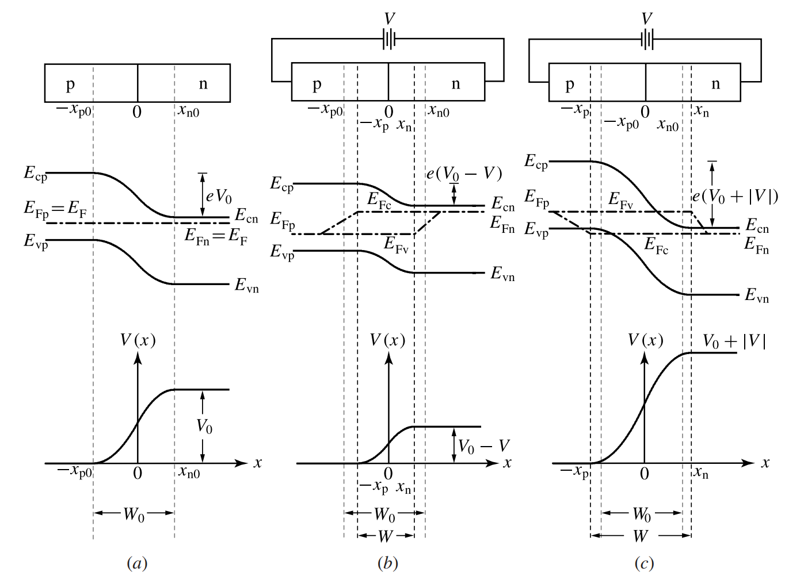
Carrier Dynamics
Drift and Diffusion
Drift current (due to electric field):
\[J_{drift} = q(\mu_n n + \mu_p p)E\]
Diffusion current (due to concentration gradient):
\[J_{diff,n} = qD_n \frac{dn}{dx}, \quad J_{diff,p} = -qD_p \frac{dp}{dx}\]
Einstein relation:
\[\frac{D}{\mu} = \frac{kT}{q} = V_T \approx 26 \text{ mV (at 300 K)}\]
Where \(D\) is diffusion coefficient and \(\mu\) is mobility.
Carrier Recombination
Recombination Mechanisms
Radiative recombination (indirect bandgap in Si - negligible) \[\tau_r \sim 1 \text{ ms}\]
Shockley-Read-Hall (SRH) (via traps) \[\tau_{SRH} \sim 1 - 10 \text{ μs}\]
Auger recombination (three-particle process) \[\tau_{Auger} \sim 0.1 - 1 \text{ μs at high injection}\]
Effective minority carrier lifetime:
\[\frac{1}{\tau_{eff}} = \frac{1}{\tau_r} + \frac{1}{\tau_{SRH}} + \frac{1}{\tau_{Auger}}\]
Carrier Dynamics: Time Response
Transit Time and RC Limitations
Carrier transit time:
\[\tau_{transit} = \frac{W^2}{2D}\]
Where \(W\) is the depletion width and \(D\) is the ambipolar diffusion coefficient.
For fast modulation:
- Minimize depletion width \(W\)
- Maximize carrier mobility
- Typical transit time: 10-100 ps
Speed is often RC-limited rather than transit-limited!
Depletion Region
Depletion Width
At equilibrium (V = 0):
\[W = \sqrt{\frac{2\epsilon_s V_{bi}}{q}\left(\frac{N_A + N_D}{N_A N_D}\right)}\]
Under applied bias V:
\[W(V) = \sqrt{\frac{2\epsilon_s (V_{bi} - V)}{q}\left(\frac{N_A + N_D}{N_A N_D}\right)}\]
Where:
- \(\epsilon_s\) = Silicon permittivity = 11.7 \(\epsilon_0\) = 1.04 × 10⁻¹² F/cm
- \(V\) = Applied voltage: \(V > 0\) forward, \(V < 0\) reverse bias (convention used throughout)
Depletion Region Characteristics
Electric Field Distribution
Maximum electric field (at junction):
\[E_{max} = \sqrt{\frac{2q(V_{bi} - V)}{\epsilon_s}\frac{N_A N_D}{N_A + N_D}}\]
For symmetric junction (\(N_A = N_D = N\)):
\[W = \sqrt{\frac{4\epsilon_s (V_{bi} - V)}{qN}}\]
\[E_{max} = \frac{2(V_{bi} - V)}{W}\]
Extra: the depletion approximation from Poisson’s equation
Assumption: inside \(-x_p < x < x_n\) all carriers are swept out, outside the material is neutral.
\[\frac{dE}{dx} = \frac{\rho}{\epsilon_s}, \qquad \rho = \begin{cases} -qN_A & -x_p<x<0 \\ +qN_D & 0<x<x_n \end{cases}\]
1. Charge neutrality: \(N_A x_p = N_D x_n\) → the depletion extends into the lighter side.
2. Field: linear on each side, maximum at the junction
\[E_{max} = \frac{qN_A x_p}{\epsilon_s} = \frac{qN_D x_n}{\epsilon_s}\]
3. Voltage = area of the triangle: \(V_{bi} - V = \tfrac{1}{2}E_{max}W\), with \(W = x_n + x_p\).
Eliminating \(x_p, x_n\):
\[W = \sqrt{\frac{2\epsilon_s (V_{bi} - V)}{q}\,\frac{N_A + N_D}{N_A N_D}}\]
Charge per area \(Q_d = qN_A x_p\) → differential capacitance
\[C_j = \frac{dQ_d}{dV} = \frac{\epsilon_s}{W}\]
Beyond the abrupt model:
- Implanted + annealed junctions are graded: for a linear grade \(W \propto (V_{bi}-V)^{1/3}\)
- Free-carrier tails (Debye length \(L_D = \sqrt{\epsilon_s V_T/qN}\) ≈ 7 nm at 3×10¹⁷) smooth the edges: TCAD (Lumerical CHARGE, Sentaurus) solves the full drift-diffusion problem
Depletion Region: Example Calculation
Design Example
N_A = 1×10¹⁷ cm⁻³ (p-type)
N_D = 1×10¹⁷ cm⁻³ (n-type)
T = 300 K
V = -2 V (reverse bias)import numpy as np
# Constants
q = 1.6e-19 # C
eps_0 = 8.854e-14 # F/cm
eps_s = 11.7 * eps_0 # Si permittivity
k = 1.38e-23 # J/K
T = 300 # K
n_i = 1.45e10 # cm^-3
# Doping
N_A = 1e17
N_D = 1e17
# Built-in potential
V_bi = (k*T/q) * np.log(N_A*N_D/n_i**2)
print(f"V_bi = {V_bi:.3f} V")
# Depletion width at V = -2V
V = -2
W = np.sqrt(2*eps_s/q * (V_bi-V) * (N_A+N_D)/(N_A*N_D))
print(f"W = {W*1e4:.3f} μm")
# Maximum field
E_max = 2*(V_bi-V)/W
print(f"E_max = {E_max/1e4:.1f} kV/cm")- V_bi = 0.815 V
- W = 0.270 μm (x_n = x_p = 135 nm)
- E_max = 209 kV/cm (well below breakdown, ~400 kV/cm)
Junction Capacitance
Depletion Capacitance
Per unit area:
\[C_j = \frac{\epsilon_s}{W} = \sqrt{\frac{q\epsilon_s}{2(V_{bi}-V)}\frac{N_A N_D}{N_A + N_D}}\]
Voltage dependence:
\[C_j(V) = \frac{C_{j0}}{\sqrt{1 - V/V_{bi}}}\]
Where \(C_{j0}\) is the capacitance at V = 0.
Junction Capacitance (continued)
Total Capacitance
For a PN junction modulator:
\[C_{total} = C_j + C_{diff} + C_{parasitic}\]
Diffusion capacitance (forward bias only):
\[C_{diff} = \frac{q}{kT}\,\tau\, I_F = \frac{\tau\, I_F}{V_T}\]
(\(I_F\) forward current, \(\tau\) minority-carrier lifetime: stored charge \(Q_s = \tau I_F\), \(C_{diff} = dQ_s/dV\))
Parasitic capacitance:
- Interconnect capacitance
- Pad capacitance
- Typically 10-50 fF
Capacitance: Design Impact
Speed-Efficiency Trade-off
RC time constant:
\[\tau_{RC} = R \times C_{total}\]
3-dB bandwidth:
\[f_{3dB} = \frac{1}{2\pi RC}\]
Key design principle:
- Large junction area → High efficiency, but high capacitance
- Small junction area → Low capacitance, but low efficiency
- Optimization required!
Python: junction profiles and C(V)

q, eps_s, VT, ni = 1.602e-19, 11.7*8.854e-14, 0.02585, 1.45e10
def depletion(NA, ND, V): # cm; V > 0 forward
Vbi = VT * np.log(NA * ND / ni**2)
W = np.sqrt(2*eps_s/q * (Vbi - V) * (NA + ND)/(NA*ND))
return W, W*ND/(NA + ND), W*NA/(NA + ND) # W, x_p, x_n
V = np.linspace(-4, 0.4, 300)
for N in (1e17, 3e17, 1e18):
W = depletion(N, N, V)[0]
C_mm = eps_s * 0.22e-4 / W * 0.1 # F per mm, h = 220 nm- Asymmetric junction: \(x_p/x_n = N_D/N_A\) → the depletion grows mostly into the lighter side.
- Lateral junction in a 220 nm rib: C′ ≈ 80–300 fF/mm, i.e. a 3 mm MZM arm is ~0.5 pF and a 30 µm ring ~5 fF.
- \(C \propto (V_{bi} - V)^{-1/2}\): biasing at −1 to −2 V lowers C and makes \(\Delta n(V)\) more linear.
Interactive: PN junction
Code
pn = {
const q = 1.602e-19, eps = 11.7 * 8.854e-14, VT = 0.02585, ni = 1.45e10;
const NA = 10 ** pnNA, ND = 10 ** pnND;
const Vbi = VT * Math.log(NA * ND / ni ** 2);
const W = Math.sqrt(2 * eps / q * (Vbi - pnV) * (NA + ND) / (NA * ND));
const xp = W * ND / (NA + ND), xn = W * NA / (NA + ND);
const pts = [], span = Math.max(1.3 * Math.max(xp, xn), 30e-7);
for (let i = 0; i <= 400; i++) {
const x = -span + 2 * span * i / 400;
let E = 0;
if (x > -xp && x <= 0) E = q * NA / eps * (x + xp);
else if (x > 0 && x < xn) E = q * ND / eps * (xn - x);
pts.push({x: x * 1e7, E: E / 1e3});
}
return {Vbi, W, xp, xn, Emax: q * NA * xp / eps, pts, Cmm: eps * 0.22e-4 / W * 0.1 * 1e15};
}
Plot.plot({
width: 950, height: 300, marginLeft: 60,
x: {label: "x (nm) → p side | n side"},
y: {label: "↑ |E| (kV/cm)", grid: true},
marks: [
Plot.areaY(pn.pts, {x: "x", y: "E", fill: "#1f6fb4", fillOpacity: 0.25}),
Plot.line(pn.pts, {x: "x", y: "E", stroke: "#1f6fb4", strokeWidth: 2}),
Plot.ruleX([0], {stroke: "#888"})
]
})Code
md`V_bi = **${pn.Vbi.toFixed(3)} V** · W = **${(pn.W * 1e7).toFixed(0)} nm** (x_p = ${(pn.xp * 1e7).toFixed(0)} nm, x_n = ${(pn.xn * 1e7).toFixed(0)} nm) · E_max = **${(pn.Emax / 1e3).toFixed(0)} kV/cm** ${pn.Emax > 4e5 ? "⚠ near breakdown" : ""} · C′ (lateral, h = 220 nm) = **${pn.Cmm.toFixed(0)} fF/mm**`Plasma Dispersion Effect
Optical Index Change in Silicon
Soref-Bennett equations (λ = 1.55 μm):
\[\Delta n = \Delta n_e + \Delta n_h = -[8.8 \times 10^{-22} \Delta N_e + 8.5 \times 10^{-18} (\Delta N_h)^{0.8}]\]
\[\Delta \alpha = \Delta \alpha_e + \Delta \alpha_h = 8.5 \times 10^{-18} \Delta N_e + 6.0 \times 10^{-18} \Delta N_h \text{ [cm}^{-1}\text{]}\]
Where:
- \(\Delta N_e\) = Free electron concentration change (cm⁻³)
- \(\Delta N_h\) = Free hole concentration change (cm⁻³)
- \(\Delta n\) = Refractive index change
- \(\Delta \alpha\) = Absorption coefficient change (cm⁻¹)
Plasma Dispersion: Key Insights
Design Implications
- Holes give more Δn per carrier: at 10¹⁸ cm⁻³, \(|\Delta n_h| \approx 2.1\times10^{-3}\) vs \(|\Delta n_e| \approx 8.8\times10^{-4}\)
- Holes also absorb less: \(6.0\) vs \(8.5 \times 10^{-18}\) cm² → better \(\Delta n/\Delta\alpha\)
- Both effects increase with carrier density
- Trade-off: Strong modulation vs. high loss
- Figure of merit: \(\frac{\Delta n}{\Delta \alpha}\) should be maximized
Typical operating range:
- Carrier density: \(10^{17}\) - \(10^{18}\) cm⁻³
- Index change: \(\Delta n \sim 10^{-4}\) - \(10^{-3}\)
- Additional loss: \(\sim\) 5-50 dB/cm
Change of index in silicon


Python: Soref–Bennett at 1310 and 1550 nm

- Holes give more \(|\Delta n|\) and less loss at all practical densities → the best FOM.
- At 1310 nm both effects are ~30 % weaker (Drude: \(\propto \lambda^2\)) → O-band modulators need more voltage or length.
- Loss in dB/cm = 4.34 × Δα (cm⁻¹): 10¹⁸ cm⁻³ of each carrier costs ≈ 60 dB/cm.
Extra: where plasma dispersion comes from (Drude model)
Free carriers respond to the optical field like damped oscillators without restoring force:
\[m^* \ddot{x} + \frac{m^*}{\tau_c}\dot{x} = -qE\]
This adds a negative susceptibility → index decreases and absorption increases with carrier density:
\[\Delta n = -\frac{q^2 \lambda^2}{8\pi^2 c^2 \epsilon_0 n}\left(\frac{\Delta N_e}{m^*_{ce}} + \frac{\Delta N_h}{m^*_{ch}}\right)\]
\[\Delta \alpha = \frac{q^3 \lambda^2}{4\pi^2 c^3 \epsilon_0 n}\left(\frac{\Delta N_e}{m^{*2}_{ce}\mu_e} + \frac{\Delta N_h}{m^{*2}_{ch}\mu_h}\right)\]
Check the order of magnitude (electrons, \(m^*_{ce} = 0.26\,m_0\), \(n = 3.48\), λ = 1.55 µm):
\[\frac{\Delta n}{\Delta N_e} \approx -1.2\times10^{-21}\ \text{cm}^3\]
vs. the empirical \(-8.8\times10^{-22}\): Drude gets the size right.
Why Soref & Bennett is used instead:
- Measured absorption spectra + Kramers–Kronig, includes inter-valence-band effects for holes
- Hence the sub-linear hole term \((\Delta N_h)^{0.8}\)
- Both effects scale with \(\lambda^2\): stronger in the mid-IR
B. Optical Phase Shifters
Introduction to Phase Shifters
Role in Photonic Circuits
Applications:
- Modulators (MZM, MRR)
- Switches and routers
- Phase shifters for beamforming
- Tunable filters
- Optical phased arrays
Key metrics:
- Phase shift efficiency (\(V_\pi L\))
- Speed (bandwidth)
- Insertion loss
- Power consumption
Phase Shift Mechanisms
Three Main Approaches
| Mechanism | Speed | Efficiency | Power |
|---|---|---|---|
| Carrier Injection | ~0.1–1 GHz (more with pre-emphasis) | Excellent (\(V_\pi L\) ≈ 0.01–0.05 V·cm) | mW (DC current) |
| Carrier Depletion | >40 GHz | Moderate (\(V_\pi L\) ≈ 1.5–3 V·cm) | Low (no DC current) |
| Thermo-Optic | ~10–100 kHz | Large Δn (\(P_\pi\) ≈ 1–30 mW) | High |
Phase shift:
\[\Delta \phi = \frac{2\pi}{\lambda} \Delta n_{eff} L\]
Where \(L\) is the phase shifter length and \(\Delta n_{eff}\) is the effective index change.
Carrier Injection Phase Shifter
Forward-Biased PN Junction
Principle:
- Forward bias injects carriers
- Increases carrier density in waveguide
- Changes refractive index via plasma effect
- Moderate speed (limited by carrier lifetime)
Advantages:
- High efficiency
- Low voltage operation
- Simple fabrication
Disadvantages:
- Limited speed (~1 GHz)
- High optical loss
- Power consumption in ON state
Typical structure
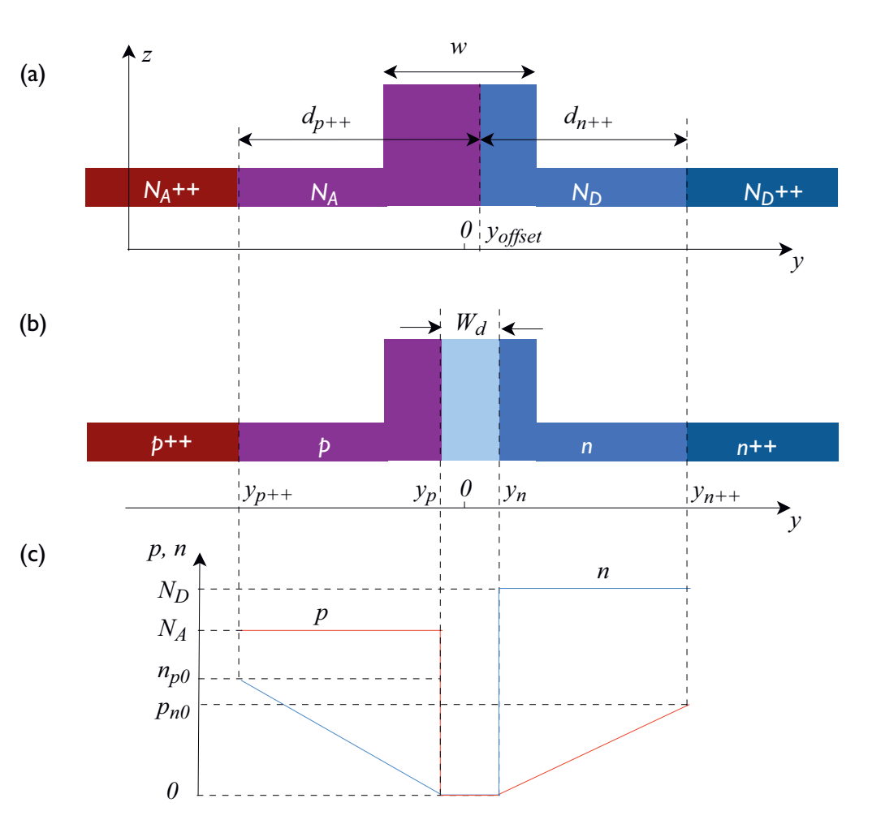
Carrier Injection: Analysis
Carrier Distribution
Injected carrier density:
\[\Delta N = \frac{J \tau}{q W}\]
Where:
- \(J\) = Current density (A/cm²)
- \(\tau\) = Carrier lifetime (s)
- \(W\) = Injection region width (cm)
Index change:
\[\Delta n_{eff} = \Gamma \Delta n\]
Where \(\Gamma\) is the optical mode overlap with the carrier injection region.
Carrier Injection: Design Example
Efficiency Calculation
Waveguide: 500 nm × 220 nm Si rib, PIN (intrinsic core)
Intrinsic width: w = 0.5 µm, height h = 0.22 µm
Length: L = 500 µm
Carrier lifetime: τ = 1 ns (surface-limited, SOI)
Mode overlap: Γ = 0.8, ΔN_e = ΔN_h = ΔNimport numpy as np
from scipy.optimize import brentq
L, w, h = 0.05, 0.5e-4, 0.22e-4 # cm
Gamma, tau, q, lam = 0.8, 1e-9, 1.6e-19, 1.55e-4
dn_eff = lam / (2 * L) # Δφ = π
print(f"Required Δn_eff: {dn_eff:.2e}")
# Soref at 1550 nm, electrons AND holes injected
dn = lambda N: 8.8e-22 * N + 8.5e-18 * N**0.8
dN = brentq(lambda N: Gamma * dn(N) - dn_eff, 1e15, 1e20)
print(f"Required ΔN: {dN:.2e} cm^-3")
# steady state: I/q = ΔN · (w h L) / τ
I = q * dN * w * h * L / tau
print(f"Current: {I*1e3:.1f} mA")
# extra loss from free-carrier absorption
da = Gamma * (8.5e-18 + 6.0e-18) * dN # cm^-1
print(f"Excess loss: {4.343 * da * L:.1f} dB")- Required \(\Delta n_{eff}\): 1.55×10⁻³
- Required \(\Delta N\): ≈ 6×10¹⁷ cm⁻³
- Current: ≈ 5 mA at \(V_F \approx 0.9\) V → \(P_\pi\) ≈ 5 mW
- \(V_\pi L\) ≈ 0.9 V × 0.05 cm ≈ 0.05 V·cm (most voltage-efficient mechanism)
- Excess loss ≈ 1.5 dB (free-carrier absorption)
Python: injection phase shifter, static and dynamic

def injection_static(I, L=0.05, w=0.5e-4, h=0.22e-4,
tau=1e-9, gamma=0.8, lam=1.55):
dN = I * tau / (q * w * h * L) # steady state
dn, da = soref(dN, dN, lam) # e and h
phi = 2*np.pi/(lam*1e-4) * gamma * abs(dn) * L
return dN, phi, 4.343 * gamma * da * L # dB
# dynamics: d(n)/dt = (drive - n)/tau, with kicks at edges
for i in range(1, len(drive)):
n[i] = max(n[i-1] + dt*(drive[i-1] - n[i-1])/tau, 0)- π at ≈ 5 mA (ΔN ≈ 6×10¹⁷ cm⁻³), ≈ 1.5 dB excess loss.
- With τ = 1 ns the plain response barely follows 5 Gb/s.
- Pre-emphasis: overdrive on rising edges, reverse kick on falling edges (the field sweeps carriers out in ps).
Extra: injection dynamics and the PIN diode
Rate equation (intrinsic region of volume \(V_i = w h L\)):
\[\frac{d\Delta N}{dt} = \frac{I(t)}{qV_i} - \frac{\Delta N}{\tau}\]
- Step response: \(\Delta N(t) = \Delta N_\infty(1 - e^{-t/\tau})\)
- 10–90 % rise time \(= 2.2\,\tau\); \(f_{3dB} = 1/(2\pi\tau)\)
- τ in SOI ribs: 0.5–5 ns, set by surface recombination at the etched sidewalls and the BOX interface
I–V: \(I = I_s(e^{V/nV_T} - 1)\) → \(\Delta\phi\) grows logarithmically with V but linearly with I → drive with current.
Ways to go faster:
- Pre-emphasis / reverse kick – extract carriers with a reverse pulse
- Reduce τ – ion implantation damage, closer contacts (but more leakage, less efficiency: \(I_\pi \propto 1/\tau\))
- Accept it – injection for VOAs, switches, slow tuning
Efficiency–speed product: \(I_\pi \cdot \tau \propto qV_i\,\Delta N_\pi\) is constant for a given geometry: halving τ doubles the current.
Carrier Depletion Phase Shifter
Reverse-Biased PN Junction
Principle:
- Reverse bias depletes carriers
- Modulates depletion width
- Changes effective index
- Very fast (capacitance-limited)
Advantages:
- High speed (>40 GHz)
- Low optical loss
- No DC power in static state
Disadvantages:
- Lower efficiency than injection
- Higher drive voltage
- More complex design
Carrier Depletion: Analysis
Depletion-Based Index Change
Mechanism:
- Depletion region expands/contracts with voltage
- Carrier density changes in depletion region
- Index change via plasma dispersion
Effective index change:
\[\Delta n_{eff} = \Gamma_{depl} \int \frac{\partial n}{\partial N} \Delta N(x) dx\]
Typical performance (lateral junction):
- \(V_\pi L\) ≈ 1.5–3 V·cm (≈ 1 V·cm for L/U-shaped or interleaved junctions)
- Speed: >40 GHz (with proper design)
- Doping loss: ≈ 2–10 dB/cm (depends on doping, see Python slide)
Depletion Phase Shifter Design
Lateral PN Junction Configuration
Common geometries:
Lateral PN
- Doped regions side-by-side (Easy fabrication)
- Moderate efficiency \(\rightarrow \Gamma\) ~ 0.3-0.5
Interleaved PN
- Multiple junctions (More complex fabrication)
- Higher efficiency \(\rightarrow \Gamma\) ~ 0.6-0.8
Vertical PN
- Stacked doping(Requires selective epitaxy)
- Highest efficiency possible \(\rightarrow \Gamma\) ~ 0.7-0.9
Depletion Phase Shifter: Optimization
Design Trade-offs: Doping concentration:
- High doping (\(\gtrsim10^{18}\) cm⁻³):
- Thinner depletion region → higher capacitance
- More carriers swept per volt → better efficiency (lower \(V_\pi L\))
- Higher optical loss
- Lower series resistance
- Low doping (\(\sim10^{17}\) cm⁻³):
- Wider depletion region → lower capacitance
- Fewer carriers per volt → worse \(V_\pi L\)
- Lower optical loss
- Higher series resistance (R·C roughly constant)
Optimal design:
- Doping: \(3-5 \times 10^{17}\) cm⁻³
- Depletion width: 200-400 nm
- Balance speed and efficiency
Python: lateral PN depletion phase shifter

from scipy.special import erf
def depletion_ps(NA, ND, V, x0=0, lam=1.55, w0=0.28e-4, gy=0.8):
ae, ah, p, be, bh = SOREF[lam]
ov = lambda x1, x2: 0.5*(erf(np.sqrt(2)*x2/w0)
- erf(np.sqrt(2)*x1/w0)) # Gaussian overlap
_, xp0, xn0 = depletion(NA, ND, 0.0)
_, xp, xn = depletion(NA, ND, V)
dneff = gy*(ae*ND*ov(x0 + xn0, x0 + xn) # electrons removed
+ ah*NA**p*ov(x0 - xp, x0 - xp0)) # holes removed
alpha = gy*(be*ND*ov(x0 + xn, np.inf) + bh*NA*ov(-np.inf, x0 - xp))
return dneff, 4.343 * alpha # -, dB/cm| N (cm⁻³) | \(V_\pi L\) (V·cm) | loss (dB/cm) | C′ (fF/mm) |
|---|---|---|---|
| 1×10¹⁷ | 3.4 | 1.1 | 105 |
| 3×10¹⁷ | 2.0 | 4.9 | 180 |
| 1×10¹⁸ | 1.2 | 20 | 320 |
(\(V_\pi L\) for a 0 → −2 V swing, loss and C at −1 V)
Δn_eff(V) is sub-linear (\(W \propto \sqrt{V_{bi}-V}\)) → depletion modulators are non-linear: matters for PAM4 and analog links.
Interactive: depletion phase shifter
Code
viewof dpN = Inputs.range([16.7, 18.5], {value: 17.5, step: 0.05, label: "log₁₀ N_A = N_D (cm⁻³)"})
viewof dpX0 = Inputs.range([-150, 150], {value: 0, step: 5, label: "junction offset x₀ (nm)"})
viewof dpVpp = Inputs.range([0.5, 4], {value: 2, step: 0.1, label: "reverse swing 0 → −V (V)"})
viewof dpL = Inputs.range([0.2, 5], {value: 2, step: 0.1, label: "length L (mm)"})Code
dp = {
const q = 1.602e-19, eps = 11.7 * 8.854e-14, VT = 0.02585, ni = 1.45e10, w0 = 0.28e-4, gy = 0.8;
const erf = x => { const s = Math.sign(x); x = Math.abs(x); const t = 1 / (1 + 0.3275911 * x);
return s * (1 - (((((1.061405429 * t - 1.453152027) * t) + 1.421413741) * t - 0.284496736) * t + 0.254829592) * t * Math.exp(-x * x)); };
const ov = (a, b) => 0.5 * (erf(Math.SQRT2 * b / w0) - erf(Math.SQRT2 * a / w0));
const N = 10 ** dpN, x0 = dpX0 * 1e-7;
const Vbi = VT * Math.log(N * N / ni ** 2);
const W = V => Math.sqrt(2 * eps / q * (Vbi - V) * 2 / N);
const dn = V => gy * (8.8e-22 * N * ov(x0 + W(0) / 2, x0 + W(V) / 2) + 8.5e-18 * N ** 0.8 * ov(x0 - W(V) / 2, x0 - W(0) / 2));
const loss = V => 4.343 * gy * (8.5e-18 * N * ov(x0 + W(V) / 2, Infinity) + 6.0e-18 * N * ov(-Infinity, x0 - W(V) / 2));
const pts = [];
for (let i = 0; i <= 80; i++) { const V = -4 * i / 80; pts.push({V: -V, dn: dn(V) * 1e5}); }
const dnS = dn(-dpVpp), VpiL = dpVpp * 1.55e-4 / (2 * dnS);
const mu = (n, e) => e ? 52.2 + (1417 - 52.2) / (1 + (n / 9.68e16) ** 0.68) : 44.9 + (470.5 - 44.9) / (1 + (n / 2.23e17) ** 0.719);
const RL = (1 / (q * mu(N, true) * N) + 1 / (q * mu(N, false) * N)) * 1e-4 / 0.09e-4;
const Cp = eps * 0.22e-4 / W(-dpVpp / 2);
return {pts, VpiL, lossDb: loss(-dpVpp / 2), Cmm: Cp * 0.1 * 1e15, fRC: 1 / (2 * Math.PI * RL * Cp) / 1e9,
phase: 2 * Math.PI / 1.55e-4 * dnS * dpL * 0.1};
}
Plot.plot({
width: 950, height: 280, marginLeft: 60,
x: {label: "reverse bias (V) →"}, y: {label: "↑ Δn_eff (×10⁻⁵)", grid: true},
marks: [Plot.line(dp.pts, {x: "V", y: "dn", stroke: "#1f6fb4", strokeWidth: 2.5}), Plot.ruleX([dpVpp], {stroke: "#c0392b", strokeDasharray: "4,3"})]
})Code
md`V_πL = **${dp.VpiL.toFixed(2)} V·cm** · doping loss = **${dp.lossDb.toFixed(1)} dB/cm** → **${(dp.lossDb * dpL / 10).toFixed(2)} dB** over ${dpL} mm · phase swing = **${(dp.phase / Math.PI).toFixed(2)} π** · C′ = ${dp.Cmm.toFixed(0)} fF/mm · intrinsic f_RC = ${dp.fRC.toFixed(0)} GHz (1 µm slabs) · FOM V_πL·α = **${(dp.VpiL * dp.lossDb).toFixed(1)} V·dB**`Extra: the V_πL·α figure of merit and the doping optimum
The loss you pay for a given phase at drive \(V\):
\[L = \frac{V_\pi L}{V}\cdot\frac{\Delta\phi}{\pi} \;\Rightarrow\; IL_{dB} = \alpha_{dB}\,L = \frac{(V_\pi L \cdot \alpha_{dB})}{V}\,\frac{\Delta\phi}{\pi}\]
→ the product \(V_\pi L\cdot\alpha\) (V·dB) is the loss for a π shift at 1 V.
| N (cm⁻³) | \(V_\pi L\cdot\alpha\) (V·dB) | L for π at 2 V |
|---|---|---|
| 1×10¹⁷ | 3.8 | 17 mm |
| 3×10¹⁷ | 9.7 | 10 mm |
| 1×10¹⁸ | 25 | 6 mm |
Paradox: the FOM prefers low doping, yet everyone uses ~3–5×10¹⁷. Why?
- Length is not free: a TW electrode loses RF power ∝ √f · L → bandwidth falls with L (section E)
- Footprint and capacitance (total C ∝ L) → driver power
- Nobody drives a full π: Si MZMs run at 20–50 % of \(V_\pi\)
So the optimum is set by bandwidth × loss × footprint, not by one FOM.
Tricks that beat the lateral trade-off: offset / L-shaped / U-shaped / interleaved junctions, compensation doping near the core, SISCAP (MOS capacitor, ~0.2 V·cm).
Thermo-Optic Phase Shifters
Temperature-Based Index Change
Thermo-optic coefficient of silicon:
\[\frac{dn}{dT} = 1.86 \times 10^{-4} \text{ K}^{-1} \text{ (at 1550 nm)}\]
Phase shift:
\[\Delta \phi = \frac{2\pi}{\lambda} \frac{dn}{dT} \Delta T L\]
Power for π phase shift:
\[P_\pi = \frac{\Delta T_\pi}{R_{th}}, \qquad \Delta T_\pi = \frac{\lambda}{2L\,dn/dT}\]
\(R_{th}\) thermal resistance (K/W). Since \(\Delta T_\pi L = \lambda/(2\,dn/dT) \approx 4.2\) K·mm and \(R_{th} \propto 1/L\), \(P_\pi\) does not depend on the heater length.
Thermo-Optic Design
Heater Configuration
Heater types:
- Metal (TiN, NiCr)
- Doped silicon
- Silicide
Placement:
- On top of waveguide
- Adjacent to waveguide
- Trade-off: efficiency vs. loss
Performance:
- Power: \(10-50 mW/\pi\)
- Response time: \(1-10 \mu s\)
- Very high efficiency
- Excellent for trimming
Thermal isolation:
- Trenches
- Undercut regions
- Minimize cross-talk
Thermo-Optic: Example Design
Power Calculation
Waveguide length: \(L = 500 \mu m\)
Required \(\Delta T\): computed below (≈ 8.3 K)
Thermal resistance: \(R_{th} = 1000\) K/W (heater with isolation trenches)
Thermal capacitance: \(C_{th} = 10^{-8}\) J/K
Heater: Doped silicon (\(R_{sheet} = 100 \Omega/□\))
import numpy as np
# Parameters
dn_dT = 1.86e-4 # K^-1
wavelength = 1.55e-6 # m
L = 500e-6 # m
Delta_T_for_pi = (wavelength/2) / (dn_dT * L)
print(f"ΔT for π shift: {Delta_T_for_pi:.1f} K")
# Power required
R_th = 1000 # K/W (typical for isolated structure)
P_pi = Delta_T_for_pi / R_th
print(f"Power for π shift: {P_pi*1e3:.1f} mW")
# Response time (thermal RC)
C_th = 1e-8 # J/K (heated volume of oxide + Si)
tau = R_th * C_th
print(f"Response time: {tau*1e6:.1f} μs")- \(\Delta T_\pi\) ≈ 8.3 K
- Power: \(P_\pi\) ≈ 8.3 mW
- Response time: τ ≈ 10 µs → bandwidth ≈ 16 kHz
- \(V_\pi L\): N/A (power-driven)
Python: thermal phase shifter

- \(P_\pi = \lambda / (2\,\frac{dn}{dT}\,R_{th}L)\): no L in it.
- Standard metal heater (R_th·L ≈ 0.2 K·m/W): P_π ≈ 21 mW.
- Undercut (≈ 2 K·m/W): ≈ 2 mW, but ×10 slower (τ ≈ 50 µs).
- $ au$ = R_th·C_th: 5–10 µs standard.
Extra: why P_π does not depend on the heater length
Steady-state heat flow (2D cross-section, uniform along z):
\[P = G'\,L\,\Delta T, \qquad G' = \frac{1}{R_{th}L} \ \ [\text{W/(m·K)}]\]
Phase: \(\Delta\phi = \frac{2\pi}{\lambda}\frac{dn}{dT}\Delta T\,L\)
\[\Rightarrow\ \Delta\phi = \frac{2\pi}{\lambda}\frac{dn}{dT}\,\frac{P}{G'}\]
Length cancels: a longer heater spreads the same power over more waveguide at lower temperature.
Estimate of G′ (heater width \(w\), oxide thickness \(t_{ox}\) to the substrate, heat spreading at ~45°):
\[G' \approx k_{SiO_2}\,\frac{w + 2t_{ox}}{t_{ox}}\quad (k_{SiO_2} = 1.4\ \text{W/mK})\]
Example: \(w = 2\) µm, \(t_{ox} = 3\) µm → \(G' ≈ 3.7\) W/(m·K), \(R_{th}L ≈ 0.27\) K·m/W → \(P_\pi ≈ 15\) mW.
How to lower P_π:
- Increase \(t_{ox}\) / remove the substrate path (undercut) → \(G'\) ↓
- Trenches next to the heater cut lateral spreading
- Multi-pass (fold the waveguide under one heater): the light crosses the hot region several times → \(P_\pi / N_{pass}\)
Price: thermal capacitance per length is set by the heated volume, so \(\tau = C'_{th}/G'\) grows as \(G'\) falls: P_π × τ ≈ constant.
Phase Shifter Comparison
Performance Summary
| Parameter | Injection | Depletion | Thermo-Optic |
|---|---|---|---|
| \(V_\pi L\) | 0.01–0.05 V·cm | 1.5–3 V·cm | N/A (\(P_\pi\)) |
| \(P_\pi\) | ~1–10 mW (DC) | ≈ 0 (no DC current) | 1–30 mW |
| Speed | ~0.1–1 GHz | >40 GHz | ~10–100 kHz |
| Loss | 20-50 dB/cm | 5-10 dB/cm | <1 dB/cm |
| Complexity | Low | Medium | Low |
Selection criteria:
- Speed required → Choose depletion
- Efficiency critical → Choose thermo-optic for trimming
- Moderate requirements → Injection may suffice
Assignment preview: Model a PN Junction
Design Challenge
Objective: Model and optimize a carrier depletion phase shifter
Requirements:
- Design lateral PN junction phase shifter
- Calculate \(V_\pi L\) for your design
- Estimate 3-dB bandwidth
- Analyze insertion loss
- Optimize for 25 Gbps operation
Tools:
- Python/MATLAB for calculations
- Lumerical MODE for mode overlap
- SPICE for RC analysis
Assignment: Deliverables
What to Submit
- Cross-section design
- Doping profiles
- Waveguide dimensions
- Junction placement
- Performance analysis
- \(V_\pi L\) calculation
- Bandwidth estimation
- Loss budget
- Optimization study
- Parameter sweeps
- Trade-off analysis
- Final optimized design
- Report (10–15 pages, 2 weeks; details in section G)
- Methodology
- Results and discussion
- Conclusion
C. MRR Modulators 1
Introduction to Microring Modulators
Why Microrings?
- Compact: ~5-10 μm radius
- Low power: fJ/bit possible
- CMOS compatible: Standard fabrication
- Wavelength selective: Built-in WDM capability
- High speed: >50 GHz demonstrated
Applications:
- Dense WDM transceivers
- Optical interconnects
- Energy-efficient data centers
Microring Resonator Basics
Fundamental Parameters
Resonance condition:
\[m\lambda = 2\pi r n_{eff}\]
Where:
- \(m\) = Integer mode number
- \(\lambda\) = Resonance wavelength
- \(r\) = Ring radius
- \(n_{eff}\) = Effective refractive index
Free spectral range (FSR):
\[FSR = \frac{\lambda^2}{2\pi r n_g}\]
Where \(n_g = n_{eff} - \lambda \frac{dn_{eff}}{d\lambda}\) is the group index.
Microring Coupling Theory
Transfer Function
Power coupling coefficient \(\kappa\) per coupler:
All-pass ring (one bus), through port:
\[T = \left| \frac{t - a e^{j\phi}}{1 - at e^{j\phi}} \right|^2\]
Add-drop ring (two identical couplers), drop port:
\[D = \left| \frac{\kappa \sqrt{a} e^{j\phi/2}}{1 - a t^2 e^{j\phi}} \right|^2\]
Where:
- \(t = \sqrt{1-\kappa}\) = self-coupling coefficient
- \(a = e^{-\alpha L/2}\) = round-trip amplitude loss
- \(\phi = 2\pi n_{eff} L / \lambda\) = round-trip phase
- \(L = 2\pi r\) = ring circumference
Quality Factor and Finesse
Resonance Characteristics
Quality factor:
\[Q = \frac{\omega_0}{\Delta \omega} = \frac{\lambda_0}{\Delta \lambda}\]
Loaded Q:
\[Q_L \approx \frac{2\pi n_g L}{\lambda_0} \cdot \frac{1}{\alpha L + \kappa}, \qquad L = 2\pi r\]
Finesse:
\[\mathcal{F} = \frac{FSR}{FWHM}\]
Typical values:
- Q: 10,000 – 100,000 → FWHM ≈ 155 – 15 pm at 1550 nm
- With FSR ≈ 10 nm: Finesse ≈ 65 – 650
Critical Coupling
Maximum Extinction
Critical coupling condition:
\[\kappa_{critical} = \alpha L\]
At critical coupling:
- Through port extinction is maximum
- \(T_{min} = 0\) (theoretically)
- Drop port power is maximum
Under-coupled: \(\kappa < \alpha L\) → Poor extinction
Over-coupled: \(\kappa > \alpha L\) → Broad resonance
Critical: \(\kappa = \alpha L\) → Optimal for switching
Python: coupling regimes, Q and phase

def ring_through(phi, a, t):
return (a**2 - 2*a*t*np.cos(phi) + t**2) / \
(1 - 2*a*t*np.cos(phi) + (a*t)**2)
R, loss = 7.5e-6, 10.0 # m, dB/cm
L = 2*np.pi*R
a = 10**(-loss * L*100 / 20) # round-trip amplitude
phi = 2*np.pi*4.2*L*(1/lam - 1/1550e-9) # group-index model
k2 = np.logspace(-3.3, -0.7, 200); t = np.sqrt(1 - k2)
QL = np.pi*4.2*L*np.sqrt(a*t) / (1550e-9*(1 - a*t))- Critical coupling when \(\kappa = 1 - a^2 \approx \alpha L\) (≈ 1.1 % here).
- Loaded Q halves at critical coupling: \(Q_L = Q_i/2\).
- Same |T| for under/over → measure phase or a gap sweep to know where you are.
Extra: derivation of the ring transfer function
Coupler (lossless, fields \(a\) = in, \(b\) = out):
\[\begin{pmatrix} b_1 \\ b_2\end{pmatrix} = \begin{pmatrix} t & j\kappa_f \\ j\kappa_f & t\end{pmatrix}\begin{pmatrix} a_1 \\ a_2\end{pmatrix},\quad t^2 + \kappa_f^2 = 1\]
Round trip: \(a_2 = a\,e^{-j\phi}\,b_2\)
Solve: \(b_2 = \dfrac{j\kappa_f\, a_1}{1 - t a e^{-j\phi}}\), then
\[\frac{b_1}{a_1} = \frac{t - a e^{-j\phi}}{1 - a t e^{-j\phi}}\]
(the slide uses \(e^{+j\phi}\): same |T|, opposite phase convention)
Near resonance (\(\phi = 2\pi m + \delta\), small losses) → Lorentzian:
\[T(\delta) \approx 1 - \frac{(1-a^2)(1-t^2)}{(1-at)^2 + at\,\delta^2}\]
- FWHM in phase: \(\delta_{1/2} = 2(1-at)/\sqrt{at}\)
- \(\mathcal{F} = 2\pi/\delta_{1/2}\), \(Q_L = \mathcal{F}\cdot \lambda/FSR\)
Q budget: \(\dfrac{1}{Q_L} = \dfrac{1}{Q_i} + \dfrac{1}{Q_e}\), with \(Q_i = \dfrac{2\pi n_g}{\lambda\,\alpha}\), \(Q_e = \dfrac{2\pi n_g L}{\lambda\,\kappa}\)
Critical coupling: \(Q_e = Q_i\), \(T_{min} = 0\).
Operating Principles: Modulation
Resonance Shift Modulation
Basic concept:
- Ring resonance aligned with signal wavelength (ON state)
- Apply voltage to phase shifter in ring
- Shift resonance away from signal (OFF state)
- Amplitude modulation achieved
Round-trip phase change required: about one linewidth, not π:
\[\Delta \phi \approx \frac{2\pi}{\mathcal{F}} \quad (\approx 0.05\text{–}0.1 \text{ rad})\]
Resonance shift (phase shifter of length \(L_{PS}\) in a ring of length \(L\)):
\[\Delta \lambda_{res} = \frac{\lambda_0\, \Delta n_{eff}}{n_g}\,\frac{L_{PS}}{L}\]
The resonance enhances the phase by ~\(\mathcal{F}/\pi\): that is why a 30 µm ring does what a mm-long MZM does.
Modulations


Python: ring modulation and laser detuning

eta = 40e-12 # m/V (resonance shift)
d = np.linspace(-300e-12, 150e-12, 400) # laser detuning
T0 = ring_through(ring_phase(1550e-9 + d, 1550e-9, R), a, t)
T1 = ring_through(ring_phase(1550e-9 + d, 1550e-9 + 2*eta, R), a, t)
hi, lo = np.maximum(T0, T1), np.minimum(T0, T1)
ER = 10*np.log10(hi/lo)
IL = -10*np.log10(hi)
OMA = hi - lo # × P_laser- Close to resonance: high ER but high IL; far: low IL but small OMA.
- OMA (what the receiver sees) peaks with the laser at the 0 V dip when the swing (80 pm) ≈ one FWHM; for smaller swings the optimum moves onto the flank.
- Laser blue of the driven resonance + red shift → more voltage = more light (non-inverted logic; self-heating is stable on the blue side).
Interactive: ring modulator
Code
viewof rgK = Inputs.range([0.002, 0.1], {value: 0.02, step: 0.001, label: "power coupling κ"})
viewof rgLoss = Inputs.range([2, 40], {value: 10, step: 1, label: "ring loss (dB/cm)"})
viewof rgR = Inputs.range([3, 15], {value: 7.5, step: 0.5, label: "radius R (µm)"})
viewof rgEta = Inputs.range([5, 60], {value: 40, step: 1, label: "efficiency (pm/V)"})
viewof rgV = Inputs.range([0.5, 4], {value: 2, step: 0.1, label: "swing V_pp (V)"})
viewof rgDet = Inputs.range([-300, 150], {value: -60, step: 5, label: "laser detuning (pm)"})Code
rg = {
const ng = 4.2, L = 2 * Math.PI * rgR * 1e-6, a = 10 ** (-rgLoss * L * 100 / 20), t = Math.sqrt(1 - rgK);
const T = (lam, lr) => { const c = Math.cos(2 * Math.PI * ng * L * (1 / lam - 1 / lr));
return (a * a - 2 * a * t * c + t * t) / (1 - 2 * a * t * c + a * a * t * t); };
const pts = [];
for (let i = 0; i <= 1200; i++) {
const lam = 1550e-9 + (-400 + 800 * i / 1200) * 1e-12;
pts.push({d: (lam - 1550e-9) * 1e12, T: T(lam, 1550e-9), s: "0 V"});
pts.push({d: (lam - 1550e-9) * 1e12, T: T(lam, 1550e-9 + rgEta * rgV * 1e-12), s: `−${rgV} V`});
}
const lamL = 1550e-9 + rgDet * 1e-12, T0 = T(lamL, 1550e-9), T1 = T(lamL, 1550e-9 + rgEta * rgV * 1e-12);
const Q = Math.PI * ng * L * Math.sqrt(a * t) / (1550e-9 * (1 - a * t));
return {pts, T0, T1, Q, a, t};
}
Plot.plot({
width: 950, height: 280, marginLeft: 60,
x: {label: "wavelength − 1550 nm (pm) →"}, y: {label: "↑ through", domain: [0, 1.02], grid: true},
color: {domain: ["0 V", `−${rgV} V`], range: ["#1f6fb4", "#c0392b"], legend: true},
marks: [Plot.line(rg.pts, {x: "d", y: "T", stroke: "s", strokeWidth: 2}), Plot.ruleX([rgDet], {stroke: "black", strokeDasharray: "5,3"})]
})Code
md`Q_L = **${Math.round(rg.Q).toLocaleString()}** · FWHM = **${(1550e3 / rg.Q).toFixed(0)} pm** · photon BW ≈ c/(λQ) = **${(3e8 / (1550e-9 * rg.Q) / 1e9).toFixed(1)} GHz** · ${Math.abs(rg.t - rg.a) < 0.002 ? "critically coupled" : (rg.t > rg.a ? "under-coupled" : "over-coupled")} · dynamic ER = **${(10 * Math.log10(Math.max(rg.T0, rg.T1) / Math.min(rg.T0, rg.T1))).toFixed(1)} dB** · IL('1') = **${(-10 * Math.log10(Math.max(rg.T0, rg.T1))).toFixed(1)} dB** · OMA = **${Math.abs(rg.T1 - rg.T0).toFixed(2)}** × P_laser`MRR Modulator Design
Key Design Parameters
- Radius: 5-10 μm
- Waveguide: 450-500 nm width
- Gap: 150-250 nm
- FSR: 10-20 nm
- Type: Carrier depletion
- Length: Full ring or partial
- Doping: 3-5×10¹⁷ cm⁻³
- Efficiency: 10–50 pm/V (no \(V_\pi\) for a ring!)
- Swing: \(V_{pp}\) ≈ 1–2.5 V to shift by ~½–1 FWHM
- κ: 0.05-0.15 (5-15%)
- Match to loss: Critical coupling
- Tunable: Use heater if needed
Design Considerations
Trade-offs and Optimization
Radius selection:
- Smaller radius:
- Larger FSR (easier WDM) Range of operation
- Lower Q \(\Rightarrow\) Larger channel bandwidth
- Higher bending loss (limits the power budget)
- Larger radius:
- Higher Q (smaller bandwidth)
- Narrower resonance
- Smaller FSR (reduced range of operation)
Optimal for modulators: \(r = 5-8 \mu m\)
Design Considerations (continued)
Coupling Gap Optimization
Gap vs. Coupling strength:
| Gap (nm) | \(\kappa\) | Application |
|---|---|---|
| 100-150 | 0.15-0.25 | High-speed modulator |
| 180-220 | 0.08-0.12 | Standard modulator |
| 250-300 | 0.03-0.05 | Narrow filter |
Design rule:
\[\kappa \approx 0.77 \exp\left(-\frac{gap}{93\text{ nm}}\right)\]
(fit to the table; depends strongly on coupler length, wavelength and waveguide geometry → always simulate your own coupler)
Speed Limitations
Bandwidth-Limiting Factors
1. Photon lifetime:
\[\tau_{photon} = \frac{Q}{\omega_0} = \frac{Q \lambda_0}{2\pi c}\]
Bandwidth:
\[f_{3dB,optical} = \frac{1}{2\pi \tau_{photon}} = \frac{c}{Q\lambda_0}\]
Example: Q = 10,000 at \(\lambda = 1.55 \mu m\)
→ \(f_{3dB} \approx 19\) GHz
Speed Limitations (continued)
RC limitation:
\[f_{3dB,electrical} = \frac{1}{2\pi RC}\]
Typical values:
- Resistance: R = 50-100 Ω (driver + modulator)
- Capacitance: C = 10-30 fF (depletion phase shifter)
- Electrical bandwidth: 50-100 GHz
Total bandwidth:
\[\frac{1}{f_{3dB,total}^2} = \frac{1}{f_{3dB,optical}^2} + \frac{1}{f_{3dB,electrical}^2}\]
Usually photon lifetime limited for high-Q rings!
Extra: time-domain coupled-mode theory (CMT)
Treat the ring as one resonant mode with energy amplitude \(A(t)\) (\(|A|^2\) = stored energy), laser \(s_{in}\) at \(\omega_L\):
\[\frac{dA}{dt} = \left[j(\omega_0(t) - \omega_L) - \frac{1}{\tau}\right]A - j\mu\, s_{in}\]
\[s_{out} = s_{in} - j\mu A\]
- \(\dfrac{1}{\tau} = \dfrac{1}{\tau_i} + \dfrac{1}{\tau_e}\), \(\tau_x = \dfrac{2Q_x}{\omega_0}\) (amplitude decay)
- \(\mu^2 = 2/\tau_e\) (energy conservation)
- Steady state reproduces the Lorentzian of the transfer-matrix model
Modulation enters through \(\omega_0(t)\): the voltage shifts the resonance, the field follows with time constant τ.
What CMT shows that the c/(λQ) rule does not:
- Overshoot and ringing when the resonance moves faster than τ (beat between laser and resonance)
- E-O response peaking for detuned lasers → bandwidth beyond the photon-lifetime limit (Sacher & Poon, Opt. Express 2008)
- Large-signal eye diagrams in a few lines of Python (next slide)
Exact update for a time step Δt (coefficients constant within the step):
\(A_{n+1} = A_n e^{p\Delta t} - j\mu s\,\dfrac{e^{p\Delta t} - 1}{p}\), \(p = j\Delta\omega - 1/\tau\)
Python: large-signal ring eye diagrams (CMT)

def ring_cmt(v, dt, Qi, Qe, eta, lam0=1550e-9, det=0.0):
w0 = 2*np.pi*C0/lam0
ti, te = 2*Qi/w0, 2*Qe/w0
mu, wl = np.sqrt(2/te), 2*np.pi*C0/(lam0 + det)
a, out = 0j, np.empty(len(v))
for i, vi in enumerate(v):
D = 2*np.pi*C0/(lam0 + eta*vi) - wl # ω0(t) − ωL
p = 1j*D - (1/ti + 1/te)
e = np.exp(p*dt)
a = a*e - 1j*mu*(e - 1)/p
out[i] = abs(1 - 1j*mu*a)**2
return out- Q_L ≈ 5k: fast, clean edges but small swing (low OMA).
- Q_L ≈ 9k: best compromise at 25 Gb/s.
- Q_L ≈ 20k: largest swing, but the field cannot follow → ringing and ISI.
- The RC pole (100 Ω × 15 fF ≈ 106 GHz) is irrelevant: photon lifetime dominates.
Optimizing for Speed
Design Strategies
- Reduce Q (lower finesse):
- Increase coupling \(\kappa\) (over-couple)
- Trade extinction for speed
- Optimize phase shifter:
- Minimize capacitance
- Contacts close to the ring (low series R)
- Driver co-design:
- Low output impedance
- Pre-emphasis for high-Q rings
- Use multiple rings:
- Cascaded configuration
- Better extinction at high speed
DEMO: Basic MRR Modulator
Design Example
Target data rate: 25 Gbps
Wavelength: 1310 nm (O-band)
Extinction ratio: > 6 dB
Platform: 220 nm SOI
Drive voltage: < 3 Vpp
Efficiency: 20 pm/V (interleaved junction)import numpy as np
c, lam = 3e8, 1.31e-6
# Ring geometry and FSR
r = 6e-6; L = 2*np.pi*r; n_g = 4.2
FSR = lam**2 / (n_g * L)
print(f"L = {L*1e6:.1f} µm, FSR = {FSR*1e9:.2f} nm")
# Q from the data rate: optical BW ≈ 0.7 × bit rate
f_opt = 0.7 * 25e9
Q = c / (lam * f_opt)
print(f"Target Q_L = {Q:.0f}, FWHM = {lam/Q*1e12:.0f} pm")
# Coupling from Q_L = 2π n_g L / (λ (αL + κ))
aL = 20 / 4.343 * L * 100 # 20 dB/cm doped ring
kappa = 2*np.pi*n_g*L / (lam*Q) - aL
print(f"αL = {aL:.4f}, κ = {kappa:.3f} (over-coupled)")
t, a = np.sqrt(1 - kappa), np.exp(-aL/2)
Tmin = (a - t)**2 / (1 - a*t)**2
print(f"Static ER at resonance = {-10*np.log10(Tmin):.1f} dB")
# Swing for a half-FWHM shift
print(f"Vpp = {lam/Q/2 / 20e-12:.2f} V")
# Electrical: 75 % of the ring doped, 0.3 fF/µm
C = 0.3e-15 * 0.75 * L * 1e6
print(f"C = {C*1e15:.1f} fF, f_RC = "
f"{1/(2*np.pi*100*C)/1e9:.0f} GHz (100 Ω)")- FSR: 10.8 nm, FWHM ≈ 103 pm
- Q_L: ≈ 12,700 → photon-lifetime BW ≈ 18 GHz
- κ: ≈ 4.2 % (≈ 2.4× the round-trip loss: over-coupled)
- Static ER at resonance: ≈ 7.4 dB
- Swing: ≈ 2.6 Vpp for a ½-FWHM shift (20 pm/V)
- C ≈ 8.5 fF → RC bandwidth ≈ 190 GHz: photon-lifetime limited
MRR Modulator: Eye Diagram Analysis
Performance Metrics
Key parameters:
Extinction Ratio (ER): \(ER = 10\log_{10}\left(\frac{P_{ON}}{P_{OFF}}\right)\)
Insertion Loss (IL): \(IL = -10\log_{10}(T_{max})\)
Quality factor: \(Q = \frac{\lambda_0}{\Delta\lambda_{FWHM}}\)
For 25 Gbps NRZ:
- Target ER: > 6 dB
- Maximum IL: < 3 dB
- Eye opening: > 65% of rail-to-rail
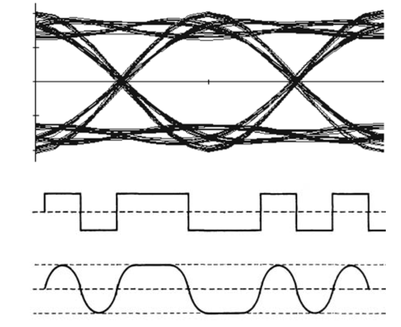
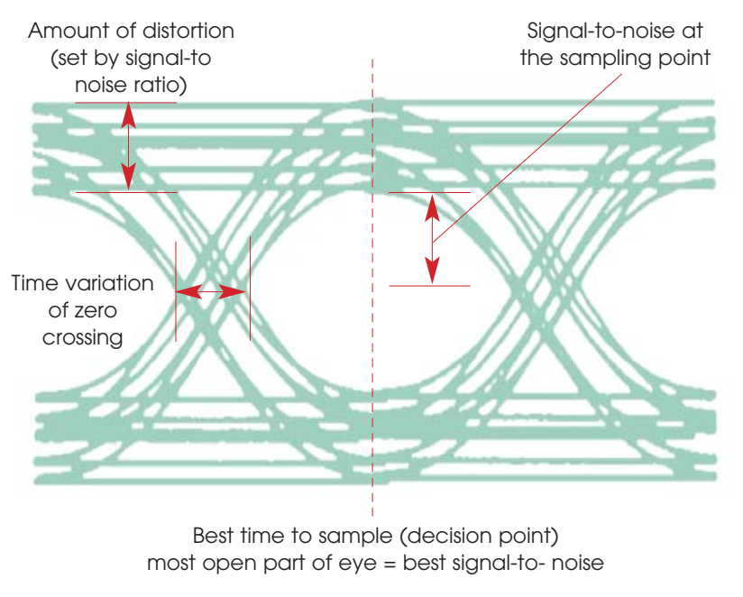
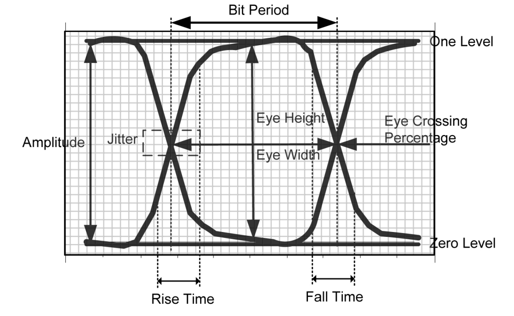
Thermal Tuning
Wavelength Stabilization
Challenge: Fabrication variations cause resonance mismatch
Solution: Integrated heater for trimming
Thermo-optic tuning:
\(\Delta \lambda = \frac{\lambda_0}{n_g} \frac{dn_{eff}}{dT} \Delta T\) (group index, not \(n_{eff}\))
For silicon:
\(\frac{\Delta \lambda}{\Delta T} \approx 70 \text{ pm/K}\)
Typical tuning range needed: ±2-3 nm (±30-40°C)
Power: ~0.1–0.3 nm/mW with standard heaters → 10–30 mW per ring for ±2–3 nm; ~1–3 mW only with undercut
D. MRR Modulators 2
Advanced Configurations
Beyond Single Ring
- Coupled rings - Improved extinction and flatness
- Cascaded rings - Higher extinction ratio
- Vernier rings - Wide tuning range
- Higher-order modulation - PAM4, PAM8
- Polarization diversity - Dual-polarization operation
Motivation:
- Higher data rates (>100 Gbps)
- Better performance
- More complex signal formats
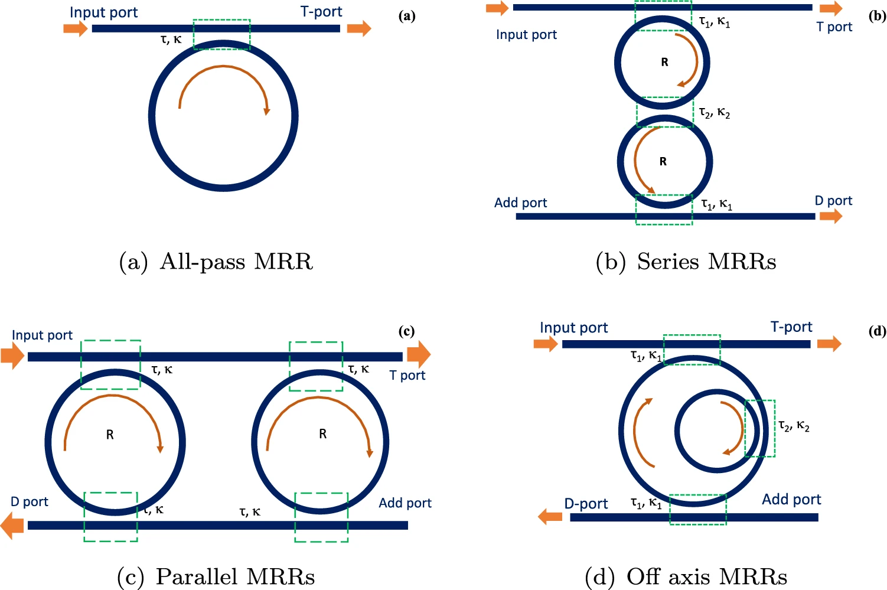
Coupled Microring Resonators
Double-Ring Configuration
Structure:
- Two rings coupled to each other
- Single bus waveguide or dual bus
- Creates flat-top filter response
Transfer function:
More complex than single ring - requires coupled-mode theory
Advantages:
- Flat passband (better for WDM)
- Sharper roll-off
- Higher extinction ratio
- More fabrication tolerant
Coupled Rings: Design
Design Parameters
Critical parameters:
- Inter-ring coupling: \(\kappa_{12}\)
- Bus-ring coupling: \(\kappa_1\), \(\kappa_2\)
- Ring circumferences: Can be identical or slightly different
Design guidelines:
- \(\kappa_{12} \approx \kappa_{bus}^2/4\) (power coupling, maximally flat, Little et al. 1997)
- Requires careful optimization
- More sensitive to fabrication variations
Performance:
- Flattened passband: a few % of FSR
- Extinction: >10 dB
- Insertion loss: <2 dB
Cascaded Ring Modulators
Series Configuration
Concept:
- Multiple rings in series along bus waveguide
- Each ring slightly detuned or identical
- Multiplicative extinction ratio
Extinction improvement:
\(ER_{total} = ER_1 + ER_2 + ... + ER_N \text{ [dB]}\)
Example:
- 3 rings, each ER = 6 dB
- Total ER ≈ 18 dB
Trade-off: Increased insertion loss
Vernier Effect Rings
Wide Tuning Range
Concept:
- Two rings with slightly different FSR
- Resonances align periodically
- Effective tuning range = LCM of FSRs
FSR relationship:
\(FSR_1 = FSR_{ref}\) \(FSR_2 = FSR_{ref}(1 + \delta)\)
Where \(\delta\) = 0.01-0.05 (1-5% difference)
Tuning range:
\(\Delta\lambda_{tuning} \approx \frac{FSR_{ref}}{\delta}\)
Application: Tunable lasers, widely tunable filters
Python: Vernier rings

def ring_adddrop(phi, a, t1, t2):
den = 1 - 2*a*t1*t2*np.cos(phi) + (a*t1*t2)**2
thr = (t2**2*a**2 - 2*a*t1*t2*np.cos(phi) + t1**2) / den
drop = (1 - t1**2)*(1 - t2**2)*a / den
return thr, drop
D1 = ring_adddrop(ring_phase(lam, 1550e-9, 10e-6), a, t, t)[1]
D2 = ring_adddrop(ring_phase(lam, 1550e-9, 10.8e-6), a, t, t)[1]
total = D1 * D2 # cascaded filters- \(FSR_V = \dfrac{FSR_1\,FSR_2}{|FSR_1 - FSR_2|}\) = 9.10 × 8.43 / 0.67 ≈ 114 nm
- Side modes at the neighbouring near-coincidences: their suppression sets the side-mode suppression of a Vernier laser.
- Heating one ring by one small FSR difference (0.67 nm) moves the coincidence by a whole FSR (9 nm): Vernier gain ≈ 13.
Higher-Order Modulation: PAM4
Pulse Amplitude Modulation
PAM4 basics:
- 4 amplitude levels (2 bits per symbol)
- Doubles data rate for same bandwidth
- Widely used in data centers (400G, 800G)
Signal levels:
- Level 0: 0 (00)
- Level 1: V/3 (01)
- Level 2: 2V/3 (11)
- Level 3: V (10)
(Gray coding: neighbours differ by one bit)
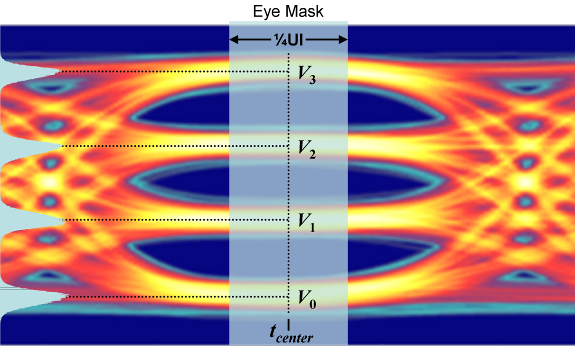
Advantage: 50 Gbps with 25 GHz bandwidth
PAM4 with MRR Modulators
Implementation Approaches
Method 1: Single ring with multi-level drive
- Drive ring with 4-level electrical signal
- Requires very linear modulator
- Simple architecture
Method 2: Segmented electrode
- Multiple phase shifters in ring
- Binary-weighted control
- Better linearity
Method 3: Multiple rings
- Cascaded rings with binary weighting
- Best linearity
- More complex design
PAM4: Linearity Requirements
Transfer Function Linearization
Challenge: MRR transfer function is Lorentzian (non-linear)
Solutions:
- Bias point optimization
- Operate on linear portion of resonance
- Use pre-distortion
- Dual-drive configuration
- Push-pull operation
- Improved linearity
- Digital pre-compensation
- DSP-based equalization
- Look-up table (LUT)
- Over-couple the ring
- Reduces peak sharpness
- More linear response
Python: PAM4 levels with a ring

- The smallest eye sets the BER: RLM < 1 is a direct SNR penalty.
- IEEE 802.3 requires RLM ≥ 0.95 at the transmitter.
- The inverse-LUT is exactly what a PAM4 driver’s per-level adjust (or the DSP) implements.
Extra: optical DAC – segmented ring for PAM4
Idea: replace the linear PAM4 driver (DAC + linear amplifier) by two NRZ drivers acting on two phase-shifter segments of the same ring:
- MSB drives a segment of length \(L_{MSB}\), LSB a segment \(L_{LSB}\)
- Resonance shift: \(\Delta\lambda = \eta'(L_{MSB}b_1 + L_{LSB}b_0)V\)
- Equal shifts in λ → \(L_{MSB} = 2L_{LSB}\)
- Equal optical levels → adjust the ratio (≠ 2) to compensate the Lorentzian, as on the previous slide
Advantages: NRZ CMOS drivers (inverters) are simple, fast and energy efficient; no linearity requirement on the electronics.
Costs and limits:
- The level spacing is fixed at layout → only fine-tuning with the bias/laser detuning
- Two RF inputs per ring, two contact pairs inside a small ring
- Timing skew between MSB and LSB closes the eye
Same idea for MZMs: segmented MZM with binary-weighted segments driven by NRZ inverters (a “photonic DAC”) — popular in monolithic CMOS-photonics.
Rule of thumb: move the complexity where it is cheapest — DSP for long-reach links, optics/layout for low-power short links.
PAM4 Performance Metrics
Key Specifications
| Parameter | NRZ | PAM4 |
|---|---|---|
| Data rate | 25 Gbps | 50 Gbps |
| Symbol rate | 25 GBaud | 25 GBaud |
| Required ENOB | 1 bit | ~4-5 bits |
| SNR requirement | ~7 dB | ~15 dB |
| Extinction ratio | 6 dB | N/A (use TDECQ) |
TDECQ (Transmitter Dispersion Eye Closure Quaternary):
- Key metric for PAM4
- Target: < 3 dB for 50G-PAM4
- Accounts for all impairments
Driver Requirements
Electrical Interface Design
Single-ended driver:
Requirements:
- Output swing: 0-3 V
- Rise/fall time: < 15 ps
- Impedance: 50 Ω
- Power: 100-200 mW
Challenges:
- High capacitive load
- Impedance matching
- Signal integrity
- Power consumption
Driver Circuits
Common Architectures
1. Lumped driver
- Simple resistor-capacitor model
- Suitable for slow modulators
- Not ideal for >25 Gbps
2. Segmented driver
- Multiple driver stages
- Distributed along modulator
- Better for longer modulators
3. Traveling-wave driver
- Velocity matching
- Ultra-broadband (>100 GHz)
- Complex design
Driver: Lumped Model
Equivalent Circuit
Basic lumped model:
Driver (R_d) → Transmission line → Modulator (C_mod, R_mod)Transfer function:
\(H(f) = \frac{1}{1 + j2\pi f RC}\)
3-dB bandwidth:
\(f_{3dB} = \frac{1}{2\pi R_{total} C_{mod}}\)
Where \(R_{total} = R_d + R_{mod} + R_{line}\)
Driver Impedance Matching
Maximizing Power Transfer
Impedance matching:
\(R_{driver} = 50\, \Omega \text{ (standard)}\)
Termination schemes:
- Series termination at driver
- \(R_{term} = 50 - R_{driver}\)
- Parallel termination at load
- \(R_{term} = 50\, \Omega\) to ground
- Matched termination
- Both series and parallel
For low capacitance modulators:
- Depletion MRR: C ≈ 10-20 fF
- Can operate without termination
- RC bandwidth > 100 GHz
Bandwidth Optimization
Design Strategies
1. Reduce capacitance:
- Shorter phase shifter
- Higher doping (trade-off with efficiency)
- Optimized junction geometry
2. Reduce resistance:
- Low-resistance contacts (silicide)
- Wide metal traces
- Multiple contact points
3. Over-couple the ring:
- Lower Q → higher optical bandwidth
- Trade extinction for speed
4. Pre-emphasis:
- Boost high frequencies electrically
- Compensate for roll-off
Pre-Emphasis and Equalization
Signal Processing Techniques
Pre-emphasis:
\(V_{out}(f) = V_{in}(f) \cdot H_{pre}(f)\)
Where \(H_{pre}(f) = 1 + \alpha \cdot \frac{jf}{f_0}\)
Feed-Forward Equalization (FFE):
- Multi-tap FIR filter
- Compensates for ISI (inter-symbol interference)
- Typically 3-7 taps
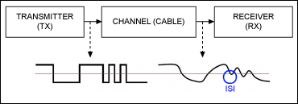
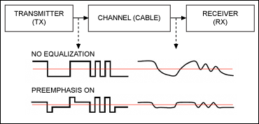
Decision Feedback Equalization (DFE):
- Corrects based on previous decisions
- Removes post-cursor ISI
- Used in receivers primarily
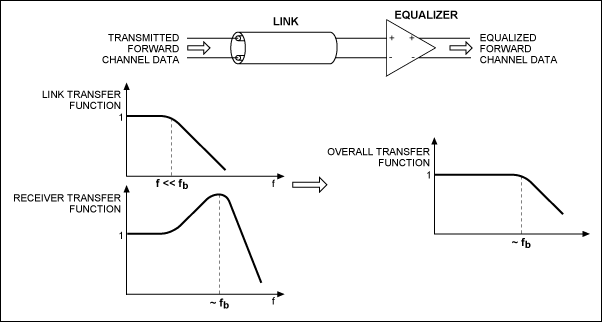
Pre-emphasis and linear equalization
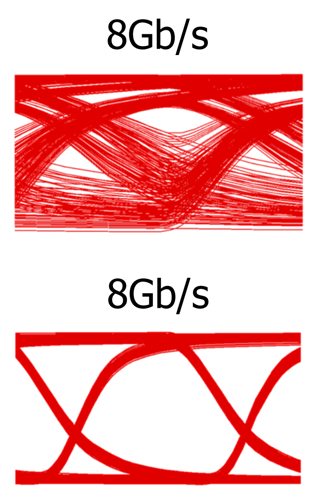
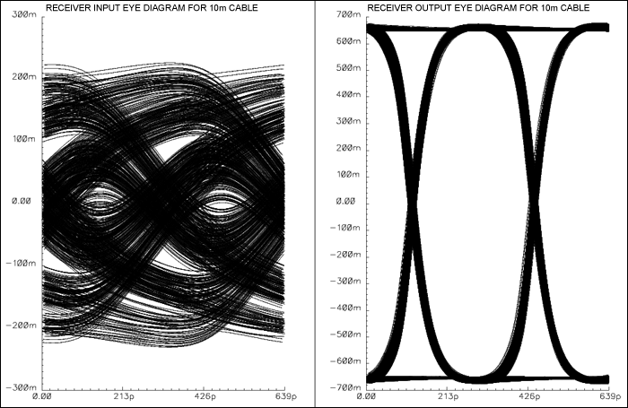
Multi-Ring Driver Architecture
Parallel Modulation
Configuration:
Data → Serializer → Driver array → Multiple MRR modulators → WDM MuxAdvantages:
- Aggregate bandwidth scaling
- Wavelength division multiplexing
- Redundancy possible
Example: 400G transceiver
- 8 × 50G PAM4 channels
- 8 MRR modulators
- 8 independent drivers
- WDM spacing: 800 GHz (6.4 nm)
Thermal Management
Multi-Ring Systems
Thermal crosstalk:
- Heat from one ring affects neighbors
- Causes wavelength drift
- Requires careful thermal isolation
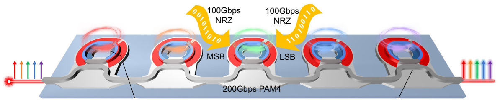
Mitigation strategies:
- Thermal isolation trenches
- Etch trenches around rings
- 10-20 μm spacing
- Active thermal control
- Individual heaters per ring
- Feedback control loops
- Thermal-aware placement
- Maximize spacing
- Thermal simulations (COMSOL)
- Athermal design
- Material combinations
- Polymer overlays
Power Consumption Analysis
Energy Efficiency
Single MRR modulator:
\(E_{bit} = \frac{P_{total}}{Data\,Rate}\)
Power components:
- Dynamic (switching): \(P_{dyn} = \frac{1}{2} C V^2 f\); for random NRZ \(E_{bit} = CV^2/4\)
- Static (leakage): Minimal for depletion
- Thermal tuning: 1–30 mW per ring
- Driver: 1–10 mW (co-integrated CMOS) to 100–200 mW (50 Ω external)
Example: 50G PAM4
- C = 15 fF, V = 2.5 V, f = 25 GHz
- \(P_{dyn}\) ≈ 1.2 mW → ≈ 23 fJ/bit (modulator only)
- With a 10 mW heater + 5 mW driver: ≈ 0.3 pJ/bit
Advanced Configuration: Polarization Diversity
Dual-Polarization MRR Modulator
Concept:
- Two rings: one for TE, one for TM
- Polarization splitter-rotator (PSR) at input
- Combiner at output
- Doubles capacity
Challenges:
- Precise wavelength matching
- Differential thermal control
- Complex driver
Application: 100G dual-pol PAM4 = 200 Gbps per wavelength
E. Mach-Zehnder Modulators
Introduction to MZM
Operating Principles
Concept:
- Split optical signal into two arms
- Apply differential phase shift
- Interfere at output
- Amplitude modulation via interference
Advantages:
- Broadband operation
- High extinction ratio
- Chirp management
- Mature technology
Key equation:
\(P_{out} = P_{in} \cos^2\left(\frac{\Delta\phi}{2}\right)\)
MZM: Transfer Function
Interference-Based Modulation
Phase difference:
\(\Delta\phi = \phi_1 - \phi_2 = \frac{2\pi}{\lambda}\Delta n_{eff} L\)
Output power:
\(P_{out} = \frac{P_{in}}{2}[1 + \cos(\Delta\phi)]\)
For push-pull operation:
\(\Delta\phi = \frac{2\pi}{\lambda}(\Delta n_1 - \Delta n_2) L\)
Effectively doubles the phase shift efficiency!
MZM Bias Points
Operating Regimes
Bias conditions:
- Null point (\(\Delta\phi = \pi\)): \(P_{out} = 0\)
- Quadrature (\(\Delta\phi = \pi/2\)): \(P_{out} = P_{in}/2\)
- Peak (\(\Delta\phi = 0, 2\pi\)): \(P_{out} = P_{in}\)
Modulation:
- Push-pull at quadrature: intensity OOK / PAM4, chirp-free
- Single-arm at quadrature: simplest, linear for analog, but chirped
- Push-pull at null: field modulation (BPSK, I/Q arms of an IQ modulator)
Python: MZM transfer, swing and chirp

def mzm_field(phi1, phi2):
return 0.5 * (np.exp(1j*phi1) + np.exp(1j*phi2))
r = np.linspace(0.05, 1.0, 200) # V_pp / V_pi
hi = np.cos((np.pi/2 - r*np.pi/2) / 2)**2 # quadrature ± swing/2
lo = np.cos((np.pi/2 + r*np.pi/2) / 2)**2
ER, OMA = 10*np.log10(hi/lo), hi - lo
E = mzm_field(-p1, -p2) # p1, p2: arm phases(t)
df = np.gradient(np.unwrap(np.angle(E)), t) / (2*np.pi)- Typical Si MZM swings are 20–50 % of \(V_\pi\) → dynamic ER ≈ 3–8 dB.
- Single-arm drive: the output phase follows half the arm phase → several GHz of chirp on each edge.
- Push-pull cancels it; a 60/40 imbalance leaves ~20 %.
Interactive: MZM bias and swing
Code
viewof mzVpi = Inputs.range([1, 15], {value: 8, step: 0.5, label: "V_π single arm (V)"})
viewof mzBias = Inputs.range([0, 1], {value: 0.5, step: 0.01, label: "bias Δφ₀ (units of π)"})
viewof mzVpp = Inputs.range([0, 8], {value: 2.5, step: 0.1, label: "V_pp per arm (V)"})
viewof mzMode = Inputs.radio(["push-pull", "single arm"], {value: "push-pull", label: "drive"})Code
mz = {
const k = mzMode === "push-pull" ? 2 : 1; // differential phase per volt (× π/Vπ)
const dphi = v => Math.PI * mzBias + k * Math.PI * v / mzVpi;
const I = v => Math.cos(dphi(v) / 2) ** 2;
const curve = [];
for (let i = 0; i <= 400; i++) { const v = -mzVpi + 2 * mzVpi * i / 400; curve.push({v, I: I(v)}); }
const lo = I(-mzVpp / 2), hi = I(mzVpp / 2);
const P1 = Math.max(lo, hi), P0 = Math.min(lo, hi);
const alpha = mzMode === "push-pull" ? 0 : 1 / Math.tan(Math.PI * mzBias / 2);
return {curve, P1, P0, swing: [{v: -mzVpp / 2, I: lo}, {v: mzVpp / 2, I: hi}], alpha};
}
Plot.plot({
width: 950, height: 280, marginLeft: 60,
x: {label: "drive voltage around the bias (V) →"}, y: {label: "↑ output intensity", domain: [0, 1.02], grid: true},
marks: [
Plot.line(mz.curve, {x: "v", y: "I", stroke: "#333", strokeWidth: 2}),
Plot.rect([{x1: -mzVpp / 2, x2: mzVpp / 2}], {x1: "x1", x2: "x2", y1: 0, y2: 1.02, fill: "#1f6fb4", fillOpacity: 0.12}),
Plot.dot(mz.swing, {x: "v", y: "I", r: 6, fill: "#c0392b"})
]
})Code
md`'1' = **${mz.P1.toFixed(3)}** · '0' = **${mz.P0.toFixed(3)}** · dynamic ER = **${(10 * Math.log10(mz.P1 / Math.max(mz.P0, 1e-6))).toFixed(1)} dB** · OMA = **${(mz.P1 - mz.P0).toFixed(3)}** × P_in · loss of '1' = ${(-10 * Math.log10(mz.P1)).toFixed(1)} dB · small-signal chirp |α| ≈ **${Math.abs(mz.alpha).toFixed(2)}**`\(V_\pi\) and \(V_\pi.L\)
Key Performance Metric
Definition:
\(V_\pi\) = Voltage required for \(\pi\) phase shift
\(V_\pi = \frac{\lambda}{2 L \Delta n_{eff}/\Delta V}\)
Half-wave voltage:
For push-pull MZM:
\(V_{\pi,pp} = \frac{V_\pi}{2}\)
Figure of merit:
\(V_\pi L = V_\pi \times L\)
Typical values:
- Carrier injection: 0.01–0.05 V·cm (but slow)
- Carrier depletion: 1.5–3 V·cm (lateral), ~1 V·cm (L/U-shaped)
- Thin-film LiNbO₃: ~2 V·cm (Pockels, >100 GHz)
Design Trade-offs
Length vs. Voltage vs. Loss
| Parameter | Short L | Long L |
|---|---|---|
| Drive voltage | High | Low |
| Insertion loss | Low | High |
| Footprint | Small | Large |
| Power | Low | Low (if depletion) |
| Bandwidth | High | Lower (RC or RF loss) |
For high-speed (>50 GHz):
- Short device (L < 1 mm)
- Minimize capacitance
- Accept higher V_π
For low-power:
- Longer device (L = 2-5 mm)
- Lower voltage
- Manage optical loss
\(V_\pi L \approx constant\)
Choose L to balance voltage and loss for your application.
Folded MZM Design
Compact Geometry
Concept:
- Serpentine waveguide pattern
- S-bends between straight sections
- Reduces chip footprint by 3-5×
Design considerations:
- Bend radius: >15 μm to minimize loss
- Straight sections: Long enough for phase shifters
- Bending loss: <0.01 dB per 90° bend
- Modal interference: Ensure single-mode operation
- Fabrication tolerance: Wider bends more tolerant
Folded MZM: Example
3mm Device in 600 μm × 600 μm
Layout:

Performance:
- Total length: 3 mm per arm
- Footprint: 0.36 mm \(^2\)
- Bending loss: ~0.5 dB total
- \(V_\pi\) ≈ 7–10 V single arm (depletion, 2–3 V·cm) → driven at a fraction of \(V_\pi\)
Push-Pull Configuration
Differential Drive
Implementation:
- Positive voltage on one arm: +V
- Negative voltage on other arm: -V
- Differential phase shift: \(2 \times\) single arm
Advantages:
- 2× efficiency: Half the voltage for same ER
- Chirp control: Symmetric intensity modulation
- Common-mode rejection: Noise immunity
- Better linearity: Balanced operation
Driver requirement:
- Differential output
- 180° phase relationship
- Matched impedance on both arms
Push-pull configuration
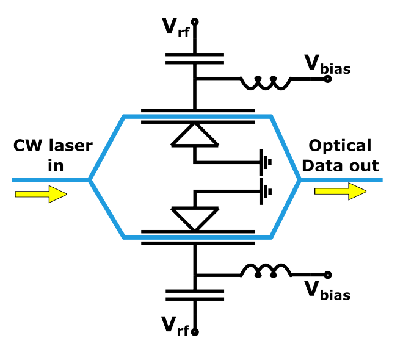
Example of a push-pull configuration for a mach-Zehnder
Chirp in MZM
Frequency Modulation
Chirp parameter:
\(\alpha = \frac{\Delta\phi_1 + \Delta\phi_2}{\Delta\phi_1 - \Delta\phi_2}\)
Types:
- \(\alpha = 0\): Zero chirp (ideal push-pull)
- \(\alpha > 0\): Positive chirp (blue-shift on rising edge)
- \(\alpha < 0\): Negative chirp (red-shift on rising edge)
Impact:
- Dispersion penalty in fiber
- Spectral broadening
- System reach limitation
Control: Adjust relative drive on two arms
Extra: the chirp of a Mach-Zehnder modulator
Output field (ideal 50:50 couplers, arm phases \(\phi_1, \phi_2\)):
\[E_{out} = \frac{E_{in}}{2}\left(e^{j\phi_1} + e^{j\phi_2}\right) = E_{in}\,e^{j\frac{\phi_1+\phi_2}{2}}\cos\frac{\phi_1 - \phi_2}{2}\]
- Intensity depends only on the difference \(\phi_1 - \phi_2\)
- Output phase \(\Phi = (\phi_1 + \phi_2)/2\) → instantaneous frequency \(\Delta f = \frac{1}{2\pi}\frac{d\Phi}{dt}\)
Chirp (Henry) factor \(\alpha = \dfrac{d\Phi/dt}{\frac{1}{2I}dI/dt}\):
\[\alpha = -\frac{\dot\phi_1 + \dot\phi_2}{\dot\phi_1 - \dot\phi_2}\cot\frac{\phi_1 - \phi_2}{2}\]
Cases (at quadrature, \(\cot(\pi/4) = 1\)):
| Drive | \(\dot\phi_2/\dot\phi_1\) | \(|\alpha|\) |
|---|---|---|
| Single arm | 0 | 1 |
| Push-pull | −1 | 0 |
| 60/40 push-pull | −2/3 | 0.2 |
In silicon the arms also change loss with voltage (free-carrier absorption), which unbalances the phasors: even perfect push-pull has a small residual chirp.
Why it matters: in dispersive fiber (C-band SMF, 17 ps/nm/km) chirp converts to intensity distortion; a slightly negative α can extend the reach of NRZ links.
MZM with Phase Shifters
Implementation Options
1. Carrier Depletion
- Fast (>40 GHz)
- Moderate efficiency
- Low loss
- Preferred for high-speed
2. Carrier Injection
- Moderate speed (~1 GHz)
- High efficiency
- Higher loss
- Good for lower speeds
3. Thermo-Optic
- For DC bias control
- Wavelength trimming
- Not for data modulation
Traveling-Wave MZM
Velocity Matching
Concept:
- Distribute electrodes along full length
- Match RF velocity to optical velocity
- Ultra-broadband operation
Design:
\(v_{RF} = v_{optical}\)
\(v_{RF} = \frac{c}{\sqrt{\epsilon_{eff,RF}}}\)
\(v_{optical} = \frac{c}{n_g}\)
Requires: \(\sqrt{\epsilon_{eff,RF}} = n_g\)
In silicon: \(n_g \approx 3.9\)–\(4.2\); an unloaded CPW has \(n_{RF} \approx 2\)–\(2.6\), but the PN-junction capacitance loads the line → \(n_{RF} \approx 3.5\)–\(4\), \(Z \approx 25\)–\(40\ \Omega\). Matching is achievable; RF loss is the main limit.
Traveling-Wave Design
Bandwidth Extension
Conventional limitations:
- RC limited to 40-60 GHz
- Mismatch causes reflection
TW-MZM advantages:
- Bandwidth >100 GHz possible
- Constant impedance
- No reflections
Implementation:
- Coplanar waveguide (CPW) electrode
- Slow-wave structures
- Careful impedance control (50 Ω)
Extra: travelling-wave response derivation
RF voltage on a matched line: \(V(z,t) = V_0 e^{-\alpha z}\cos\left[\omega\left(t - \frac{n_{RF}z}{c}\right)\right]\)
A photon entering at \(t_0\) is at \(z\) at time \(t_0 + n_g z/c\) and sees
\[V = V_0 e^{-\alpha z}\cos\left[\omega t_0 + \omega\frac{(n_g - n_{RF})z}{c}\right]\]
Integrating the phase along \(L\) and normalising:
\[H(f) = \frac{1 - e^{-(\alpha + j\Delta\beta)L}}{(\alpha + j\Delta\beta)L},\qquad \Delta\beta = \frac{2\pi f (n_g - n_{RF})}{c}\]
Two limits (−3 dB electrical, \(|H| = 1/\sqrt{2}\)):
- Lossless, mismatched: \(|H| = |\mathrm{sinc}(\Delta\beta L/2)|\) → \[f_{3dB} \approx \frac{1.39\,c}{\pi L |n_g - n_{RF}|}\]
- Matched, lossy: \(|H| = (1 - e^{-\alpha L})/\alpha L\) → bandwidth reached when the total RF loss is αL ≈ 0.74 Np = 6.4 dB
Si numbers: RF loss ~3 dB/(cm·√GHz) → 6.4 dB at 2 mm is reached near 50 GHz; add the junction’s own RC pole (~60 GHz) → ≈ 35 GHz.
Also: impedance mismatch at the input and the termination (reflections → ripple).
Python: travelling-wave MZM bandwidth

def tw_response(f, L, n_rf=3.8, ng=4.0, a0_db=3.0, f_j=60e9):
alpha = a0_db * np.sqrt(f/1e9) * 100 / 8.686 # Np/m
db = 2*np.pi*f*(n_rf - ng) / C0 # rad/m
g = (alpha + 1j*db) * L
H = (1 - np.exp(-g)) / g
return np.abs(H) / np.sqrt(1 + (f/f_j)**2) # junction pole
for L in (1e-3, 2e-3, 3e-3, 4e-3):
resp_dB = 20*np.log10(tw_response(f, L))| L (mm) | 1 | 2 | 3 | 4 |
|---|---|---|---|---|
| f₃dB (GHz) | 46 | 35 | 26 | 20 |
| \(V_\pi\) (V) | 20 | 10 | 6.7 | 5 |
Bandwidth × \(V_\pi\) does not improve with length: choose L from the bandwidth spec, then live with the \(V_\pi\).
Interactive: travelling-wave MZM
Code
viewof twL = Inputs.range([0.5, 6], {value: 2, step: 0.1, label: "length L (mm)"})
viewof twNrf = Inputs.range([2, 5], {value: 3.8, step: 0.05, label: "RF index n_RF (n_g = 4.0)"})
viewof twA0 = Inputs.range([0, 6], {value: 3, step: 0.1, label: "RF loss (dB/(cm·√GHz))"})
viewof twFj = Inputs.range([20, 200], {value: 60, step: 5, label: "junction pole f_j (GHz)"})
viewof twVpiL = Inputs.range([0.5, 4], {value: 2, step: 0.1, label: "V_πL (V·cm)"})Code
tw = {
const c = 299792458, L = twL * 1e-3, pts = [];
let f3 = null;
for (let i = 1; i <= 600; i++) {
const f = i * 0.25e9;
const al = twA0 * Math.sqrt(f / 1e9) * 100 / 8.686, db = 2 * Math.PI * f * (twNrf - 4.0) / c;
const gr = al * L, gi = db * L, e = Math.exp(-gr);
const nr = 1 - e * Math.cos(gi), ni = e * Math.sin(gi);
let H2 = (gr === 0 && gi === 0) ? 1 : (nr * nr + ni * ni) / (gr * gr + gi * gi);
H2 /= 1 + (f / (twFj * 1e9)) ** 2;
const dB = 10 * Math.log10(H2);
if (f3 === null && dB < -3) f3 = f / 1e9;
pts.push({f: f / 1e9, dB});
}
return {pts, f3: f3 === null ? ">150" : f3.toFixed(0), Vpi: twVpiL / (twL / 10)};
}
Plot.plot({
width: 950, height: 280, marginLeft: 60,
x: {label: "frequency (GHz) →"}, y: {label: "↑ E-O response (dB)", domain: [-12, 0.5], grid: true},
marks: [Plot.line(tw.pts, {x: "f", y: "dB", stroke: "#1f6fb4", strokeWidth: 2.5}), Plot.ruleY([-3], {stroke: "#c0392b", strokeDasharray: "4,3"})]
})Driver Considerations
Electrical Interface
Driver specifications:
| Parameter | Requirement |
|---|---|
| Output voltage | 2-4 Vpp (differential) |
| Rise/fall time | <10 ps (for 50 Gbps) |
| Output impedance | 50 Ω per arm |
| Bandwidth | 0.75 × bit rate |
| Power consumption | 200-500 mW |
Driver types:
- Linear driver: Direct synthesis
- Digital driver: DAC-based (for PAM)
- Pre-emphasized: Equalization built-in
Lumped Model for MZM
Equivalent Circuit
Per-arm model:
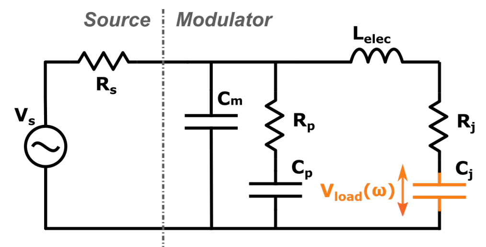
Lumped model
Parameters:
- \(R_s\): Series resistance (metal + contact) = 50-100 Ω
- \(C_1, C_2\): Distributed capacitance
- \(C_{total}\) = 50-200 fF (depending on length)
Lumped Model: Bandwidth Analysis
Frequency Response
Single-pole response:
\(H(f) = \frac{1}{\sqrt{1 + (f/f_{3dB})^2}}\)
For 3mm MZM with depletion:
- \(C \approx 100\) fF
- \(R \approx 75\) Ω
- \(f_{3dB} = \frac{1}{2\pi RC} \approx 21\) GHz
Bandwidth enhancement:
- Reduce length (trade-off with \(V_\pi\))
- Segmented electrodes
- Lower capacitance per unit length
CASE STUDY: 50 Gbps MZM Design
Complete Design Example
Data rate: 50 Gbps NRZ
Wavelength: 1310 nm
Extinction ratio: > 10 dB
Drive voltage: < 3 Vpp
Platform: 220 nm SOI
Bandwidth: > 35 GHzConfiguration: Push-pull, folded
Phase shifter: Carrier depletion
Length per arm: 2 mm
Doping: 5×10¹⁷ cm⁻³ (N and P)
Junction: Lateral PN
Electrode: Coplanar waveguideimport numpy as np
from module4_figures import f3db_tw # TW model of the next slides
L_cm, VpiL = 0.2, 2.0 # 2 mm per arm, 2 V·cm
V_pi = VpiL / L_cm # single-arm V_π
print(f"V_π single arm: {V_pi:.1f} V, push-pull: {V_pi/2:.1f} V")
Vpp = 2.5 # per arm, push-pull
r = 2 * Vpp / V_pi # phase swing in units of π
hi = np.cos(np.pi/4 * (1 - r))**2 # biased at quadrature
lo = np.cos(np.pi/4 * (1 + r))**2
print(f"dynamic ER = {10*np.log10(hi/lo):.1f} dB, "
f"'1' level loss = {-10*np.log10(hi):.1f} dB")
# 2 mm is not lumped at 35 GHz -> travelling wave
print(f"TW bandwidth: {f3db_tw(2e-3)/1e9:.0f} GHz")
IL = (2 + 5) * L_cm + 2 * 0.2 # wg+doping, two MMIs
print(f"Insertion loss (static peak): {IL:.1f} dB")
Z0 = 35 # loaded line, terminated
P = 2 * Vpp**2 / (4 * Z0) # two arms, NRZ
print(f"Termination power {P*1e3:.0f} mW "
f"-> {P/50e9*1e12:.1f} pJ/bit")- V_π: 10 V single arm, 5 V push-pull
- 2.5 Vpp per arm → phase swing π/2 → dynamic ER ≈ 7.7 dB, ‘1’ level −0.7 dB
- Bandwidth (TW, 2 mm): ≈ 35 GHz ✓
- Static insertion loss: ≈ 1.8 dB (+ 3 dB at quadrature)
- Termination power: ≈ 90 mW → ≈ 1.8 pJ/bit (vs ~20 fJ/bit for a ring)
- The > 10 dB ER spec is met only statically
Advanced MZM Configurations
Nested and IQ Modulators
Nested MZM:
- MZM within each arm of parent MZM
- 4 independent phase shifters
- Enables complex modulation
IQ Modulator:
- In-phase (I) and Quadrature (Q) paths
- 90° phase difference between paths
- Essential for coherent communications
Applications:
- QPSK, 16-QAM modulation
- Coherent transmission
100 Gbps systems
Dual-Polarization MZM
DP-MZM Architecture
Structure:
Input ──> PSR ──┬──> MZM (TE) ──┬──> Combiner ──> Output
│ │
└──> MZM (TM) ───┘Advantages:
- Doubles capacity
- Polarization diversity
- Standard in long-haul systems
Challenges:
- Complex driver: 2 drives (DP intensity), 4 for DP-IQ (XI, XQ, YI, YQ)
- Thermal management
- Larger footprint
MZM Performance Summary
Comparison with MRR
| Parameter | MZM | MRR |
|---|---|---|
| Bandwidth | >40 GHz | 10-40 GHz |
| Footprint | Large (mm) | Small (μm) |
| Extinction (dynamic) | 3–8 dB (Si), >20 dB static | 4–8 dB, >20 dB static |
| Efficiency | \(V_\pi L\) 1.5–3 V·cm | 10–50 pm/V |
| Energy/bit | ~pJ/bit (terminated TW) | ~10–50 fJ/bit (+ heater) |
| Wavelength selective | No | Yes |
| Temperature sensitivity | Low (bias drift only) | ~70 pm/K → needs locking |
| Chirp control | Excellent | Limited |
| Complexity | Driver / RF design | Thermal control loop |
F. Design Practice
Practical Design Considerations
Layout and Fabrication
MZM layout checklist:
- Waveguide routing
- Balanced arm lengths (±1 μm)
- Smooth bends (R >15 μm)
- Minimize crossings
- Splitter/combiner
- 3-dB couplers (50:50 split)
- MMI or directional couplers
- Low excess loss (<0.2 dB)
- Phase shifter placement
- Equal length in both arms
- Straight sections preferred
- Access for electrical contacts
- Electrical routing
- GSG pad configuration
- 50 Ω transmission lines
- Minimize parasitics
Testing and Characterization
Measurement Techniques
DC characterization:
- Sweep voltage, measure transmission
- Extract \(v_\pi\)
- Verify extinction ratio
- Check balance between arms
AC characterization:
- \(S_{21}\) measurement (E-O response)
- Eye diagram analysis
- Bit error rate testing
- Chirp measurement (optical spectrum)
Equipment:
- Network analyzer (up to 70 GHz)
- Bit error rate tester (BERT)
- Optical spectrum analyzer (OSA)
- High-speed oscilloscope (>80 GHz)
Failure Modes and Troubleshooting
Common Issues
| Symptom | Possible Cause | Solution |
|---|---|---|
| High insertion loss | Bending loss, phase shifter loss | Optimize bends, reduce length |
| Low extinction | Imbalanced arms, coupling ratio | Check fabrication, adjust bias |
| Limited bandwidth | High capacitance, poor impedance match | Reduce C, improve matching |
| High chirp | Unbalanced drive | Adjust drive amplitudes |
| Thermal drift | No stabilization | Add heater, feedback control |
Design Optimization Flow
Step-by-Step Process
- Define specifications
- Data rate, wavelength, ER, voltage budget
- Select phase shifter type
- Injection, depletion, or thermo-optic
- Determine length
- Based on V_π L and available voltage
- Layout design
- Folded vs. straight, splitter/combiner
- Electrical co-design
- Driver, transmission lines, pads
- Simulate performance
- Optical (MODE, FDTD), Electrical (HFSS, SPICE)
- Fabricate and test
- Iterate based on results
Design project (example)
Task: Design a complete modulator system for 100 Gbps
Choose one of:
Option A: MRR-based
- 4 × 25 Gb/s NRZ (or 12.5 GBd PAM4)
- WDM configuration
- Include thermal tuning
- Driver specifications
Option B: MZM-based
- Single 100G PAM4
- Folded geometry
- Push-pull drive
- Complete lumped model
Deliverables: complete design with dimensions · performance analysis · lumped (or TW) circuit model · layout drawing
G. Assignment & Code
Assignment: PN Junction Modeling – Part 1
Detailed Requirements
Part 1: Theory (30%)
- Derive depletion width for asymmetric junction
- Calculate built-in potential for given doping
- Analyze carrier dynamics (drift, diffusion, recombination)
- Estimate junction capacitance vs. voltage
Assignment: PN Junction Modeling – Part 2
Detailed Requirements
Part 2: Design (40%)
- Design lateral PN junction phase shifter:
- Choose doping concentrations
- Determine waveguide geometry
- Calculate mode overlap (use MODE solver)
- Estimate V_π L
Assignment: PN Junction Modeling – Part 3
Detailed Requirements
Part 3: Analysis (30%)
- Bandwidth analysis:
- Calculate RC time constant
- Estimate carrier transit time
- Determine 3-dB bandwidth
- Compare with photon lifetime (if used in ring)
- Trade-off study:
- Plot \(V_\pi.L\) vs. doping
- Plot bandwidth vs. doping
- Plot loss vs. doping
- Find optimal design point
Submission:
- Technical report (10-15 pages)
- Python/MATLAB code
- MODE simulation files
- Due: 2 weeks
Example Code: PN Junction Simulator
Python Implementation
import numpy as np
import matplotlib.pyplot as plt
class PNJunction:
def __init__(self, N_A, N_D, T=300):
"""Initialize PN junction parameters"""
self.N_A = N_A # Acceptor concentration (cm^-3)
self.N_D = N_D # Donor concentration (cm^-3)
self.T = T # Temperature (K)
# Physical constants
self.q = 1.6e-19 # Elementary charge (C)
self.k = 1.38e-23 # Boltzmann constant (J/K)
self.eps_0 = 8.854e-14 # Vacuum permittivity (F/cm)
self.eps_si = 11.7 * self.eps_0 # Silicon permittivity
self.n_i = 1.45e10 # Intrinsic carrier concentration
# Calculate built-in potential
self.V_bi = (self.k * self.T / self.q) * \
np.log(self.N_A * self.N_D / self.n_i**2)
def depletion_width(self, V=0):
"""Calculate depletion width for given bias voltage"""
factor = 2 * self.eps_si / self.q
doping_term = (self.N_A + self.N_D) / (self.N_A * self.N_D)
W = np.sqrt(factor * (self.V_bi - V) * doping_term)
return W
def capacitance(self, V, area=1e-8):
"""Calculate junction capacitance (F)"""
W = self.depletion_width(V)
C = self.eps_si * area / W
return C
def electric_field_max(self, V=0):
"""Calculate maximum electric field"""
W = self.depletion_width(V)
E_max = 2 * (self.V_bi - V) / W
return E_max
# Example usage
if __name__ == "__main__":
# Create PN junction
pn = PNJunction(N_A=1e17, N_D=1e17)
print(f"Built-in potential: {pn.V_bi:.3f} V")
print(f"Depletion width (V=0): {pn.depletion_width(0)*1e4:.3f} μm")
# Plot depletion width vs. voltage
V_range = np.linspace(0, -5, 100)
W_range = [pn.depletion_width(V)*1e4 for V in V_range]
plt.figure(figsize=(10, 6))
plt.subplot(1, 2, 1)
plt.plot(-V_range, W_range, linewidth=2)
plt.xlabel('Reverse Bias (V)')
plt.ylabel('Depletion Width (μm)')
plt.title('Depletion Width vs. Bias')
plt.grid(True)
# Plot capacitance vs. voltage
area = 0.22e-4 * 0.1 # lateral junction: 220 nm height x 1 mm length (cm^2)
C_range = [pn.capacitance(V, area)*1e15 for V in V_range]
plt.subplot(1, 2, 2)
plt.plot(-V_range, C_range, linewidth=2, color='red')
plt.xlabel('Reverse Bias (V)')
plt.ylabel('Capacitance (fF)')
plt.title('Junction Capacitance vs. Bias')
plt.grid(True)
plt.tight_layout()
plt.savefig('pn_junction_analysis.png', dpi=300)
plt.show()Example Code: Phase Shifter Designer
Doping sweep with the lateral-PN model
import numpy as np
from scipy.special import erf
q, eps_s, VT, ni = 1.602e-19, 11.7 * 8.854e-14, 0.02585, 1.45e10
def depletion(NA, ND, V): # cm, V > 0 forward
Vbi = VT * np.log(NA * ND / ni**2)
W = np.sqrt(2 * eps_s / q * (Vbi - V) * (NA + ND) / (NA * ND))
return W, W * ND / (NA + ND), W * NA / (NA + ND)
def depletion_ps(N, V, x0=0.0, w0=0.28e-4, gy=0.8):
# Δn_eff (vs 0 V) and loss (dB/cm) of a lateral PN, Soref 1550 nm
ov = lambda a, b: 0.5 * (erf(np.sqrt(2) * b / w0) - erf(np.sqrt(2) * a / w0))
_, xp0, xn0 = depletion(N, N, 0.0)
_, xp, xn = depletion(N, N, V)
dn = gy * (8.8e-22 * N * ov(x0 + xn0, x0 + xn) + 8.5e-18 * N**0.8 * ov(x0 - xp, x0 - xp0))
alpha = gy * (8.5e-18 * N * ov(x0 + xn, np.inf) + 6.0e-18 * N * ov(-np.inf, x0 - xp))
return dn, 4.343 * alpha
def design(N, Vpp=2.0, L=0.2, lam=1.55e-4): # L in cm
dn, _ = depletion_ps(N, -Vpp)
_, loss = depletion_ps(N, -Vpp / 2)
VpiL = Vpp * lam / (2 * dn)
Cmm = eps_s * 0.22e-4 / depletion(N, N, -Vpp / 2)[0] * 0.1 * 1e15
return VpiL, loss, VpiL / L, loss * L, Cmm
print(" N (cm^-3) VpiL(V.cm) loss(dB/cm) Vpi(V) IL(dB) C'(fF/mm)")
for N in np.logspace(17, 18.3, 8):
print(f"{N:9.2e} " + " ".join(f"{v:9.2f}" for v in design(N)))H. Wrap-up
Advanced Topics
Beyond This Module
Topics not covered (see next modules):
- Photodetectors - Detection and receivers
- Lasers - On-chip light sources
- Advanced modulation - Coherent formats
- Nonlinear effects - Kerr, Raman, FWM
- Co-packaging - Electronics integration
- System design - Link budgets, BER analysis
Further Reading
Recommended Resources
Books:
- “Silicon Photonics Design” - Chrostowski & Hochberg
- “Optoelectronics” – E. Rosencher & B. Vinter (Cambridge)
- “Photonic Devices” – Jia-Ming Liu (Cambridge)
- “Silicon Photonics: An Introduction” – G. T. Reed & A. P. Knights (Wiley)
Review papers:
- G. T. Reed et al., “Silicon optical modulators”, Nature Photonics 4, 518 (2010)
- W. Bogaerts et al., “Silicon microring resonators”, Laser Photonics Rev. 6, 47 (2012)
Further Reading (continued)
Online Resources
Simulation tools:
- Lumerical (MODE, FDTD, INTERCONNECT)
- Ansys HFSS (RF/microwave)
- Synopsys OptSim (System-level)
- VPI Photonics (Transmission systems)
Design kits:
- AIM Photonics PDK
- AMF PDK (Advanced Micro Foundry, Singapore)
- Applied Nanotools (e-beam, Canada)
- IHP, CORNERSTONE (Europe, via Europractice)
- imec ISIPP PDK
- Tower Semiconductor PH18 PDK
Learning:
- edX: Photonic Integrated Circuits
- Coursera: Silicon Photonics
- Lumerical University
- OSA/SPIE tutorials
Industry Perspective
Current State of the Art
Performance benchmarks (2025):
MRR Modulators:
- ≥100 Gb/s PAM4 demonstrated (research)
- Energy: <50 fJ/bit
- Footprint: <100 μm²
- Used in: Data center interconnects
MZM:
- \(>100 GHz\) bandwidth
- 224 Gbps PAM4
- Chirp-managed
- Used in: Long-haul, metro networks
Emerging: thin-film LiNbO₃ (Pockels, \(V_\pi L\) ≈ 2 V·cm, >100 GHz, low loss) · BTO on Si · plasmonic (ultra-compact, lossy) · graphene / 2D materials (research)
Commercial Products
Market Examples
Intel:
- 100G PSM4 transceivers
- Silicon photonics co-packaged with ASIC
- MZM-based
Cisco/Luxtera:
- 100G/400G modules
- Travelling-wave MZMs
- CMOS fab (130 nm SOI node)
Rockley Photonics:
- Health-sensing platforms
- Large-waveguide (µm-scale) Si photonics
- Restructured in 2023
Ayar Labs:
- Chiplet optical I/O
- TeraPHY platform
- MRR-based WDM
Module Summary
Key Takeaways
- PN junctions enable electrically-controlled modulation via plasma dispersion
- Phase shifters trade-off speed, efficiency, and loss
- MRR modulators are compact and efficient but bandwidth-limited
- Advanced MRR configurations enable higher data rates and complex modulation
- MZM provides broadband, high-performance modulation with chirp control
- Driver co-design is critical for high-speed operation
- Push-pull MZM doubles efficiency and enables chirp control
Module 4 Summary Table
| Device | Speed | Efficiency | Size | Best For |
|---|---|---|---|---|
| Thermo-optic PS | ~10–100 kHz | Large Δn, mW | Medium | Trimming |
| Injection PS | ~0.1–1 GHz | Excellent (\(V_\pi L\)) | Small | Moderate speed, VOAs |
| Depletion PS | >40 GHz | Moderate | Small | High speed |
| MRR (single) | 10-40 GHz | Excellent | Very small | Energy efficiency |
| MRR (coupled) | 10-30 GHz | Good | Small | WDM, filtering |
| MZM | >40 GHz | Good | Large | Long-haul, performance |
| Folded MZM | >40 GHz | Good | Medium | Compact high-speed |
| TW-MZM | >100 GHz | Moderate | Large | Ultra-broadband |
Key Equations Summary
Essential Formulas
PN Junction: \(V_{bi} = \frac{kT}{q}\ln\left(\frac{N_A N_D}{n_i^2}\right), \quad W = \sqrt{\frac{2\epsilon_s(V_{bi}-V)}{q}\frac{N_A+N_D}{N_A N_D}}\)
Plasma Dispersion: \(\Delta n = -[8.8\times10^{-22}\Delta N_e + 8.5\times10^{-18}(\Delta N_h)^{0.8}]\)
Phase Shift: \(\Delta\phi = \frac{2\pi}{\lambda}\Delta n_{eff} L\)
MRR Transfer: \(T = \left|\frac{t-ae^{j\phi}}{1-ate^{j\phi}}\right|^2\)
MZM Output: \(P_{out} = \frac{P_{in}}{2}[1+\cos(\Delta\phi)]\)
Bandwidth: \(f_{3dB} = \frac{1}{2\pi RC}\)
Questions and Discussion
Topics for Discussion
- What are the fundamental limits to modulator speed?
- How can we reduce power consumption further?
- What role will new materials (LiNbO₃, 2D materials) play?
- How to co-design modulators with drivers optimally?
- What are the key challenges for coherent systems?
- How does temperature affect modulator performance?
- What testing challenges exist for >100 Gbps devices?
Next Steps
Preparation for Next Module
Module 5 Preview: Active Components 2
- Photodetectors and receivers
- Germanium integration
- Avalanche photodiodes
- High-speed detection
- Transimpedance amplifiers
Final Remarks
Key Messages
- Modulators are the heart of photonic transmitters
- Trade-offs are inevitable - optimize for your application
- Physics sets the limits - understand the fundamentals
- Co-design is critical - optics + electronics together
- Fabrication matters - design for manufacturing
- Testing validates - always verify your predictions
- Keep learning - field evolves rapidly
Remember: Great designs come from understanding fundamentals AND practical constraints!
Thank You!
Course Information
Instructor: Philippe Velha Email: philippe.velha@unitn.it Office: POVO 1 - 243
Next Class: Module 5 - Active Components 2 (Photodetectors)
Assignment Due: PN Junction Modeling (2 weeks)
Questions?
Good luck with your designs!
Appendix
Appendix A: Material Properties
Silicon Properties (300K)
| Property | Value | Units |
|---|---|---|
| Bandgap | 1.12 | eV |
| n_i | 1.45×10¹⁰ | cm⁻³ |
| μ_n | 1400 | cm²/(V·s) |
| μ_p | 450 | cm²/(V·s) |
| ε_r | 11.7 | - |
| n (1550nm) | 3.48 | - |
| dn/dT | 1.86×10⁻⁴ | K⁻¹ |
| α (intrinsic) | <1 | dB/cm |
Appendix B: Fabrication Processes
Standard SOI Process Flow
- Starting material: 220nm Si / 2μm BOX
- Waveguide definition: 193nm DUV lithography
- Etch: ICP-RIE (Inductively Coupled Plasma)
- Doping: Ion implantation (P, B)
- N-type: Phosphorus, 5-50 keV
- P-type: Boron, 2-20 keV
- Dose: 10¹³-10¹⁵ cm⁻²
- Activation anneal: 900-1050°C, 5-30 min
- Silicide formation: Ti or Ni, rapid thermal anneal
- Contact/via etch: Oxide etch to Si
- Metallization: Al or Cu, 0.5-2 μm
- Passivation: SiO₂ or SiN, 0.5-1 μm
Appendix C: Measurement Setups
DC Characterization
Equipment needed:
- Tunable laser (1250-1650 nm)
- Optical power meter
- Source-measure unit (SMU)
- Precision voltage source
- Fiber coupling stages
- Temperature controller
Measurements:
- Transmission vs. wavelength (V=0)
- Transmission vs. voltage (fixed λ)
- IV curves (dark and illuminated)
- Thermal tuning efficiency
Appendix D: Lumerical Workflow
MODE Solutions (waveguide modes):
- Define cross-section geometry
- Set doping profiles
- Run FDE solver
- Extract n_eff, mode profile
- Calculate overlap integral (Γ)
FDTD (grating couplers, resonators):
- Define 3D structure
- Set simulation region
- Add sources and monitors
- Run time-domain simulation
- Post-process transmission
INTERCONNECT (system-level):
- Build element library
- Connect elements
- Define signals
- Run circuit simulation
- Analyze eye diagrams, BER
Backup: Carrier Injection Details
Forward Bias Analysis
Injection efficiency:
\(\eta_{inj} = \frac{I_{minority}}{I_{total}}\)
Minority carrier distribution:
\(\Delta n(x) = \Delta n(0) e^{-x/L_d}\)
Where \(L_d = \sqrt{D\tau}\) is the diffusion length.
For typical Si parameters:
- \(L_d \approx 50\) μm (holes in n-region)
- \(\tau \approx 1\) μs
- Need short injection region for fast response

Module 4: Active Components 1